CSE 513 · Ders 2: CPU scheduling and real-time principles (birleşik anlatım)#
Bölümler
- 0. Tamirhane benzetmesi, ready ve blocked, CPU ve I/O burst'leri
- 1. Scheduler, dispatcher, dispatch latency, karar anları, preemptive ve nonpreemptive
- 2. Ölçütler ve zaman muhasebesi
- 3. FCFS ve convoy effect
- 4. SJF, optimallik argümanı, burst tahmini
- 5. SRTF
- 6. Round robin ve birinci yarı karşılaştırması
- 7. Öncelik, starvation, aging, multilevel queue, MLFQ
- 8. Çok çekirdek: ne zamanlanır, kuyruklar, affinity, NUMA, SMT
- 9. Real-time temelleri: hard ve soft, r/C/D/T, latency, RM/EDF modeli
- 10. Rate-monotonic, Liu–Layland, response-time analysis
- 11. EDF ve priority inversion
- 12. Linux: CFS'ten EEVDF'e, sınıflar, nice, FIFO/RR/DEADLINE, Ubuntu gözlemi
- 13. Politika değerlendirme, Little's law, gizli varsayımlar
- Ek: Ubuntu'da denenecek küçük deneyler (önce tahmin et, sonra çalıştır)
Hazırlık 2026-11-03. Dört uzman ajan çalıştı: algoritmalar ve ölçütler; çok çekirdek ve real-time; Linux ve C pratiği; sınav ve pedagoji. Her biri hocanın bütün sayısal örneklerini kendi simülatörüyle yeniden hesapladı. Ardından bir denetçi ajan dört notu kaynaklara karşı kontrol etti. 2 kritik, 9 orta ve 15 düşük bulgu çıkardı (D-01…D-26) ve 172 örneği sıfırdan yazdığı simülatörle bağımsız olarak yeniden hesapladı. Hocanın slaytlarındaki hiçbir sayı çürütülmedi. Notlara ait bulgular bu dosyada düzeltildi; hangisinin hangi bölümde düzeltildiği dosyanın sonundaki yorumda listeli. cpu-work.c bu makinede (macOS) derlenip çalıştırıldı. Linux'a özgü her komut çıktısı "Ubuntu'da beklenen, burada doğrulanmadı" diye işaretli.
Ders materyalleri (hocanın sitesine en son 2026-11-03'te bakıldı; canlı sürüm yerel kopyayla birebir aynı çıktı: slayt PDF'i, okuma HTML'i, ders sayfası, cpu-work.c, okumanın 26 şekli, iki OSTEP PDF'i ve OSC ch5.pptx karşılaştırıldı). Yerel yollar materyaller/ altındadır, kısaltma: D02/ = Ders-02_CPU-scheduling/.
- Ders sayfası: lecture-02.html →
_site-kopyasi/lecture-02.html. Konu: "How should processors be shared, and what changes when deadlines matter?", 2. hafta. - Okuma kitapçığı: lecture-02-reading.html →
_site-kopyasi/lecture-02-reading.html; PDF hâliD02/CSE513-Lecture02-Okuma.pdf. 16 bölüm; §15'te on çalışılmış soru var. - Slaytlar (67 slayt): CSE513-Lecture02.pdf →
D02/CSE513-Lecture02.pdf. - OSTEP bölümleri:
- Ch. 7 Scheduling: Introduction →
D02/OSTEP/cpu-sched.pdf - Ch. 8 Scheduling: The Multi-Level Feedback Queue →
D02/OSTEP/cpu-sched-mlfq.pdf
- Ch. 7 Scheduling: Introduction →
- OSC 10e, Bölüm 5 (ders sayfası: "selected sections rather than every slide"): resmî slaytlar, ch5 →
D02/OSC-10-slaytlar/ch5.pptx. Hocanın okuma eşlemesi sl. 67: §§5.1–5.3 politikalar, §5.5 çok çekirdek, §5.6 real time, §5.8 değerlendirme. - Kod: cpu-work.c →
D02/kod/cpu-work.c. - Okumanın verdiği Linux başvuruları (yerel kopya yok): sched-eevdf, sched-deadline, sched(7), chrt(1), taskset(1), ps(1).
- İzleme: bu hafta için zorunlu izleme yok. Okumanın sonunda "Required viewing has not been assigned for Week 2" yazıyor (siteye 2026-11-03'te bakıldı). Dersin tek zorunlu izlemesi 1. haftanın Corbató filmi.
Sınav düzeni (Ders 1 slaytları 3–4): ara sınav 7. hafta (%30), final %40, sunum %15, ödevler %15. Finalin yarısı sunumlardan, yarısı derslerden gelir. Bu derste sorulacak şey büyük olasılıkla bir zaman çizelgesi (timeline) kurmak, metrik hesaplamak ve "bu iddia neyi kanıtlamaz?" diye cevap vermek.
Son gün rotası (önce hesap, sonra kavram): §2.2 zaman muhasebesi (T, W, R) → §5.2 SRTF izi → §6.2 RR q = 4 ve §6.6 karşılaştırma → §3.2–3.3 FCFS iki sıra → §4.2 SJF ve §4.6 exponential averaging → §7.2 öncelik (8,2) → §10.3–10.4 Example B, RM ve RTA (35 → 60 → 85) → §11.2 EDF ile Example B, 160'a kadar → §10.2 Liu–Layland tablosu → §12.7 nice 0 / nice 10 ideal hesabı → §13.3 gizli varsayımlar. Okumanın kendi önerisi de bu: FCFS, SRTF ve RR'yi cevaba bakmadan yeniden kur, Example B'yi RM ve EDF ile 160'a kadar izle Okuma §15.
Kaynak etiketleri:
- sl. N: hocanın slaytı (birinci kaynak).
- Okuma §N: okuma kitapçığının bölümü. [S-N]: okumadaki çalışılmış soru.
- OSC chX, OSTEP: ikincil kaynaklar.
- ek bilgi: kaynaklarda yok, genel bilgi.
Bu derste okumanın çalışılmış soruları §15'te; etiketi [Okuma §15 S-N] biçiminde yazıyorum. Okumadaki şekil altyazıları ("instructor slide 25, 47…") hocanın eski destesinin numaralarını kullanır. Bu dosya mevcut 67 slaytlık destenin numaralarını kullanır.
Hocanın bu dersteki yöntemi: önce varsayımları yaz, sonra çizelgeyi kur, metriği en son hesapla. Her hesaplı örneğin önünde ayrı bir varsayım slaytı var (sl. 18, sl. 27, sl. 50). Hoca "keep the workload and assumptions fixed" der sl. 35. Slaytların çoğu yine "X, Y'yi kanıtlamaz" kalıbında: %100 utilization iyi yanıtı, U < 1 RM deadline'larını, affinity bir CPU'nun ayrıldığını, sanal deadline duvar saati sözünü kanıtlamaz sl. 35; sl. 66. Sınavda mutlak bir iddiaya karşı yalnız "hayır" demek yetmez; eksik varsayımı adıyla söylemek gerekir.
Dersin ana sorusu sl. 2: "Which ready task should execute next, and for how long?" Hazır işlerden hangisi şimdi çalışmalı ve ne kadar süre? Ders sayfası bunu deadline'larla genişletir: işlemciler nasıl paylaşılmalı ve deadline önemli olunca ne değişir? İki yarı sl. 2:
- Birinci yarı: multiprogramming, ölçütler ve FCFS, SJF, SRTF, round robin zaman çizelgeleri.
- İkinci yarı: öncelikler, çok çekirdekli yürütme, real-time gereksinimleri, RM/EDF ve Ubuntu gözlemi.
Öğrenme hedefleri (ders sayfası, lecture-02.html):
- Belirtilen varsayımlarla zaman çizelgesi kurmak ve karşılaştırmak.
- Yanıt verebilirlik (responsiveness), adalet (fairness) ve deadline gereksinimlerini birbirinden ayırmak.
0. Tamirhane benzetmesi, ready ve blocked, CPU ve I/O burst'leri sl. 2–10#
0.1 Tek tamirci, birkaç araba: multiprogramming sl. 3; Okuma §1#
Sezgi. Bir tamirhanede tek tamirci var. Tamirci CPU'dur, arabalar process'lerdir. Bir araba parça beklerken tamirci elini boş bırakmaz; hazır olan başka bir arabaya bakar sl. 3.

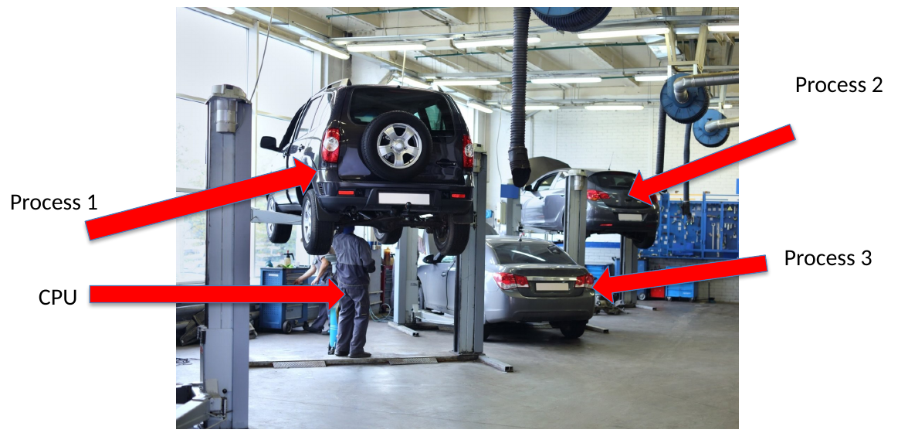
Tanım. Multiprogramming (çoklu programlama), birden çok işi bellekte tutup biri ilerleyemezken işlemciyi öbürüne vermektir. Amaç CPU'yu meşgul tutmaktır: "Maximum CPU utilization obtained with multiprogramming" OSC ch5 sl. 4. Bir işin beklemesi ile başka bir işin yararlı çalışması örtüşür (overlap) Okuma §1.
Sınırlar. Okuma benzetmenin nerede bittiğini açıkça söyler Okuma §1:
- Multiprogramming eksik parçayı daha erken getirmez. Bekleyen cihaz hızlanmaz sl. 9.
- Tek tamirci iki bağımsız işi aynı anda yapamaz. Tek CPU da basit modelimizde iki komut akışını aynı anda yürütmez.
- CPU'nun context switch'i durumu tam olarak saklar ve aynen geri yükler. Tamircinin iş değiştirmesinde CPU'da karşılığı olmayan kısıtlar olabilir. Benzetmeyi ready, hizmet ve bekleme ayrımı için kullan, sonra işletim sistemi mekanizmasını açıkça söyle.
0.2 İki tamirci: concurrency ve parallelism sl. 4; Okuma §1#
İki tamirci iki ayrı arabada aynı anda ilerleyebilir. Bu, paralel kapasite (parallel capacity) ekler. Tek tamircinin arabalar arasında gidip gelmesi ise concurrency (eşzamanlılık) ve multiprogramming örneğidir; o tek kaynak üzerinde paralel yürütmeye dönüşmez sl. 4. Ortak aletler (lift, teşhis cihazı) ve bağımlılıklar iki tamircinin yapabileceğini yine sınırlar sl. 4. Okumanın uyarısı: benzetme kaynak sayısıyla ilgilidir, belirli bir işlemcinin ölçülmüş performansıyla değil Okuma §1.

Bu ayrım 8. bölümde geri gelir: tek bir thread bir anda yalnız bir mantıksal CPU'da çalışır sl. 43.
0.3 Aciliyet, kısa iş, uzun iş sl. 5–7; Okuma §2#
Öncelik (priority). Bazı işler aciliyet ya da politika yüzünden öncelik alır. Varış sırası olası kurallardan yalnız biridir sl. 5. Hocanın fotoğrafı bir politika tartışmasını başlatır, ama her acil işin çalışan işi hemen kesmesi gerektiğini kanıtlamaz. Sorulacak iki soru: neyi güvenle kesebiliriz, aciliyeti hangi kanıt tanımlar sl. 5? Okumanın cümlesi: öncelik bir politikanın seçtiği sıralamadır; tek başına bir deadline koymaz, işin güvenle kesilip kesilemeyeceğini söylemez, acil işin zamanında biteceğini kanıtlamaz Okuma §2.

Kısa iş. Lastik değişimi kısa bir hizmet talebidir. Kısa işleri önce bitirmek ortalama beklemeyi azaltabilir sl. 6. Ama zamanlamada önemli olan programın toplam ömrü değil, bir sonraki CPU burst'üdür (next CPU burst). Saatlerce açık kalan bir tarayıcı, her girdiden sonra çok sayıda kısa burst üretir sl. 6; Okuma §2.

Uzun iş. Motor tamiri büyük bir hizmet talebidir. Kısa işi her zaman kayırmak uzun işi süresiz erteleyebilir. Süre tahmini yanlış da olabilir. Zamanlama şu an bilineni kullanmalı ve öbür işlerin ilerlemesini korumalıdır sl. 7.

0.4 Ready ve blocked sl. 8; Okuma §2#
Tanım.
- Tamirciyi bekleyen araba, CPU hizmeti bekleyen çalışabilir (runnable, ready) işe karşılık gelir. Elinde her şey vardır, yalnız CPU eksiktir.
- Gelmeyen parçayı bekleyen araba bloklu (blocked) işe karşılık gelir. Önce dış bir olay (I/O tamamlanması, girdi) gerçekleşmelidir. Ona öncelik vermek eksik parçayı getirmez sl. 8.
- Aynı iş ömrü boyunca bu iki durum arasında defalarca gidip gelir sl. 8.

Teşhis değeri. Uzun hazır kuyruk beklemesi CPU rekabetini gösterir. Uzun cihaz beklemesi başka bir darboğazı gösterir Okuma §2. Bu ayrım 2. bölümdeki zaman muhasebesinin temelidir: bloklu süre waiting time'a sayılmaz.
Linux'ta nasıl görünür ek bilgi; Ubuntu'da beklenen, burada doğrulanmadı. ps -o pid,stat,comm çıktısında R çalışan ya da çalışabilir, S kesilebilir uyku (olay bekliyor), D kesilemez uyku (çoğu zaman disk I/O) demektir. R sütunu "şu an CPU'da" ile "CPU bekliyor"u ayırmaz.
0.5 CPU ve I/O burst'leri sl. 9–10; OSC ch5 sl. 4–5; Okuma §3#
Tanım. Process yürütmesi CPU çalışması ile dış bir işlemin bitmesini bekleme arasında gidip gelir: CPU burst → I/O burst → CPU burst … sl. 9; OSC ch5 sl. 4. CPU burst, iş bloklanmadan ya da başka bir nedenle yürütmeden çıkmadan önceki kesintisiz işlemci çalışmasıdır Okuma §3. Bir iş bir evrede CPU-bound (CPU'ya bağlı), başka bir evrede I/O-bound (I/O'ya bağlı) olabilir sl. 9.

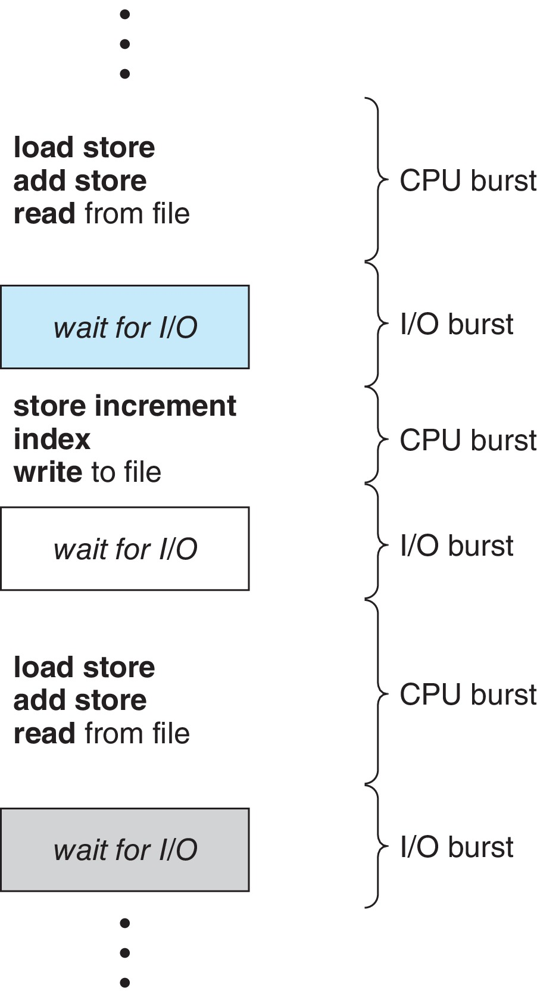
Burst histogramı. Ders kitabının histogramı çok sayıda kısa, az sayıda uzun burst gösterir OSC ch5 sl. 5. Hocanın uyarısı: bu bir ders kitabı çizimidir, bizim Ubuntu makinelerimizin ölçümü değildir sl. 10. Burst dağılımı, kısa işi kayırmanın tipik yanıtı iyileştirip iyileştirmeyeceğini belirler. Ortalamalar çok uzun bekleyen az sayıdaki işi gizleyebilir sl. 10. Bir karışımda işe yarayan politika başka bir karışımda kötü olabilir Okuma §3.

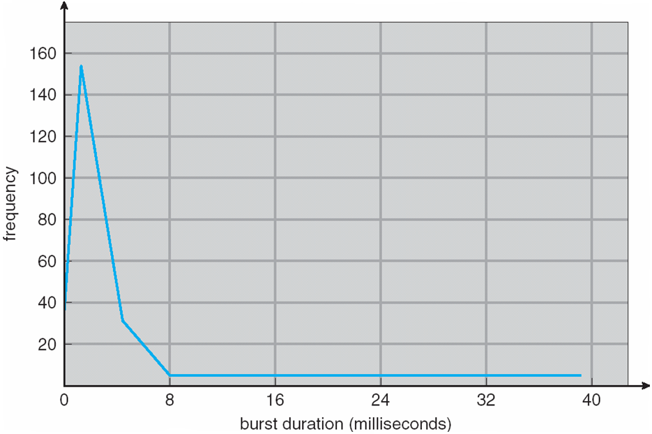
Örtüşmenin sınırı. Örtüşmenin faydası iş yüküne bağlıdır. Bütün işler aynı meşgul cihazı bekliyorsa CPU'ya verilecek hazır iş azalır Okuma §3. 3.4'teki konvoy etkisi bunun sayısal örneğidir.
Tuzaklar.
- "Multiprogramming işleri hızlandırır": CPU'yu doldurur, bekleyen cihazı hızlandırmaz sl. 9.
- "Tek tamirci = paralellik": concurrency'dir sl. 4.
- "Bloklu işin önceliğini artırırsam çabuk biter": önce olay gelmeli sl. 8.
- "Kısa iş = kısa ömürlü program": ölçü bir sonraki burst'tür sl. 6.
- "Histogram bizim makinemizi anlatır": ders kitabı çizimi sl. 10.
Kontrol soruları
- Bir tarayıcı saatlerce açık kalıyor, bir hesap programı iki saniyede bitiyor. SJF açısından hangisi "kısa iştir" ve neden soru yanlış sorulmuştur?
- Bir iş disk okumasını bekliyor. Önceliğini en yükseğe çıkarmak onun ne zaman biteceğini değiştirir mi? Ready ile blocked ayrımıyla açıkla.
1. Scheduler, dispatcher, dispatch latency, karar anları, preemptive ve nonpreemptive sl. 11–15#
1.1 Scheduler seçer sl. 11; OSC ch5 sl. 6; Okuma §3#
Sezgi. Tamirhanenin servis masası hangi arabanın boştaki tamirciye gideceğine karar verir sl. 11.

Tanım. CPU scheduler (zamanlayıcı), uygun (eligible) işlere bir politika uygular ve hazır kuyruktaki işlerden birini seçip ona bir CPU çekirdeği ayırır sl. 11; OSC ch5 sl. 6. İki ince nokta:
- Seçilen iş ilk gelen olmak zorunda değildir sl. 11.
- "Kuyruk" düz bir FIFO listesi olmak zorunda değildir; başka veri yapılarıyla da tutulabilir sl. 11; OSC ch5 sl. 6. (Linux'un CFS'i bunu kırmızı-siyah ağaçla yapıyordu; bkz. 12.1.)
1.2 Dispatcher aktarır sl. 12; OSC ch5 sl. 9#
Sezgi. Seçilen arabayı tamirciye teslim etmek ayrı bir iştir sl. 12.

Tanım. Dispatcher (görevlendirici), seçimden sonra aktarımı yapar ki seçilen iş gerçekten çalışsın sl. 12. OSC üç adım sayar OSC ch5 sl. 9:
- context switch (bağlam değiştirme): çalışan işin register'larını sakla, seçilenin bağlamını yükle,
- user mode'a geçiş,
- kullanıcı programında doğru adrese atlayıp programı sürdürme.
Politika ve mekanizma. "Hangisi çalışsın?" politika (scheduler) sorusudur. "Nasıl geçilir?" mekanizma (dispatcher, context switch) sorusudur. Hoca: "Selection policy and context-switch mechanism answer different questions" sl. 12; Okuma §3. Ders 1'deki trap ve context switch mekanizması burada dispatcher'ın içindedir.
1.3 Dispatch latency ve maliyet sl. 13; OSC ch5 sl. 9; Okuma §3#
Tanım. Dispatch latency (görevlendirme gecikmesi), bir işi durdurup başka birini başlatmanın gecikmesidir sl. 13; OSC ch5 sl. 9.
Maliyet. Saklanan durum, bir işin başka biri çalıştıktan sonra kaldığı yerden devam etmesini sağlar. Ama dispatch zaman harcar ve yararlı önbellek (cache) durumunu bozabilir sl. 13. Önbellek ve adres çevirisi (TLB) etkileri dolaylı maliyet ekler Okuma §3. OSTEP buna branch predictor'ı da ekler OSTEP 7. Bu süre uygulamanın istediği hesabı ilerletmez.
Hocanın modelleme kararı. İlk zaman çizelgeleri bu maliyeti sıfır sayar, böylece yalnız politikanın etkisi görünür. Sonraki örnekler açıkça verilmiş bir switch maliyetini geri ekler sl. 13. Gerçek performansı yorumlarken bu varsayım geri alınmalıdır Okuma §3.
1.4 Karar ne zaman verilir? sl. 14; OSC ch5 sl. 6#
OSC'ye göre zamanlama kararı, process şu dört geçişten birini yaptığında verilebilir OSC ch5 sl. 6. Hoca bunları iki gruba ayırır sl. 14:
| # | Geçiş | Örnek | Seçim zorunlu mu? |
|---|---|---|---|
| 1 | running → waiting | I/O isteği, wait() |
Evet. CPU boşaldı, başka bir hazır iş seçilmeli. |
| 2 | running → ready | timer kesmesi, quantum doldu | İsteğe bağlı. Politika çalışanı kesmeyi seçebilir. |
| 3 | waiting → ready | I/O tamamlandı, iş uyandı | İsteğe bağlı. |
| 4 | running → terminated | exit() |
Evet. |
- Çalışan iş bloklanır ya da biter (1, 4): başka bir hazır iş çalışabilir sl. 14.
- Timer dolar ya da bir iş uyanır (2, 3): politika çalışan işi preempt etmeyi seçebilir sl. 14.
Hocanın cümlesi: "An interrupt is a scheduling opportunity, not proof that a different task ran" sl. 14. Kesme bir karar fırsatıdır. Scheduler mevcut işi devam ettirebilir.
ek bilgi Yeni bir işin sisteme gelmesi (new → ready) da pratikte bir karar anıdır: SRTF ve preemptive öncelik varışta karşılaştırma yapar sl. 27. OSC'nin listesinde bu, bir işin hazır kuyruğa girmesi olarak 3'e benzer.
1.5 Preemptive ve nonpreemptive sl. 15; OSC ch5 sl. 7–8#
Tanımlar.
- Nonpreemptive (kesmesiz): iş, mevcut burst'ü bitene ya da bloklanana kadar CPU'yu tutar sl. 15. Karar yalnız 1 ve 4'te verilir OSC ch5 sl. 7.
- Preemptive (kesmeli): hâlâ çalışabilir durumdaki bir iş durdurulup hazır kuyruğa geri konabilir. Daha sonra kayıtlı bağlamından devam eder sl. 15. Windows, macOS, Linux ve UNIX'in hepsi preemptive zamanlama kullanır OSC ch5 sl. 7.
Bedeli. Kesilme, paylaşılan durumdaki hataları açığa çıkarabilir (race condition): bir process veriyi güncellerken kesilir, öbürü tutarsız veriyi okur. Bu bir sonraki dersin (synchronization) konusudur sl. 15; OSC ch5 sl. 8.
Linux'ta nasıl görünür ek bilgi; Ubuntu'da beklenen, burada doğrulanmadı.
grep ctxt /proc/<pid>/status
# voluntary_ctxt_switches: 2 (iş kendisi bloklandı: I/O, sleep, kilit)
# nonvoluntary_ctxt_switches: 118 (iş çalışabilirken scheduler onu kesti)
CPU-yoğun bir iş neredeyse hiç gönüllü switch yapmaz; aynı CPU'da rakip varsa gönülsüz switch sayısı artar. Sayaçlar kaç kez CPU'dan çıkıldığını söyler, ne kadar beklendiğini söylemez.
Tuzaklar.
- "Kesme geldi, demek ki başka iş çalıştı": kesme fırsattır, kanıt değildir sl. 14.
- "Scheduler ile dispatcher aynı şey": biri seçer (politika), öbürü aktarır (mekanizma) sl. 12.
- "Sıfır maliyetli çizelge gerçek performanstır": maliyet bilerek çıkarıldı, yorumlarken geri eklenir sl. 13.
- "Nonpreemptive iş hiç CPU bırakmaz": bloklanınca ya da burst bitince bırakır sl. 15.
Kontrol soruları
- Dört karar anından hangileri nonpreemptive bir scheduler'da da karar gerektirir? Neden öbür ikisi yalnız preemptive politikada anlamlıdır?
- Bir timer kesmesinden sonra aynı iş çalışmaya devam etti. Bu bir context switch oldu mu? Dispatch latency ödendi mi?
2. Ölçütler ve zaman muhasebesi sl. 16–17#
2.1 Ölçütler sl. 16; OSC ch5 sl. 10–11; Okuma §4#
Sezgi. "İyi çizelge" tek bir sayı değildir. Tamirhanenin sahibi tamircinin boş durmamasını, müşteri arabasının erken bitmesini, acil araç da zamanında çıkmayı ister. Bu hedefler çatışabilir.
| Ölçüt | Hocanın tanımı sl. 16 | Hedef OSC ch5 sl. 11 |
|---|---|---|
| CPU utilization (kullanım oranı) | meşgul süre / geçen süre | max |
| Throughput (üretilen iş) | birim zamanda tamamlanan iş sayısı | max |
| Turnaround time (dönüş süresi) | varıştan tamamlanmaya | min |
| Waiting time (bekleme süresi) | hazır olup çalışmadan geçen toplam süre | min |
| Response time (yanıt süresi) | varıştan ilk CPU hizmetine | min |
| Fairness (adalet), deadline | düşük ortalama beklemeden çıkarılamaz | — |
Tanım farkları (sınavda önemli).
- Response time. Hoca: varıştan ilk CPU hizmetine. Uygulamanın kullanıcıya görünen ilk yanıtı daha sonra olabilir sl. 16; Okuma §4. OSC: isteğin gönderilmesinden ilk yanıtın üretilmesine OSC ch5 sl. 10. OSTEP: T_firstrun − T_arrival OSTEP 7. Sınavda hocanın tanımını kullan.
- Waiting time. OSC: hazır kuyrukta geçen süre OSC ch5 sl. 10. Hoca da aynısını söyler: hazır ama çalışmıyor sl. 16.
- Fairness. OSTEP adaleti ayrı bir metrik olarak anar (Jain's Fairness Index) ve performans ile adaletin çoğu zaman çeliştiğini söyler OSTEP 7. Hoca: adalet ve deadline gereksinimleri düşük ortalama beklemeden tek başına çıkarılamaz sl. 16.
2.2 Zaman muhasebesi: A, S, C, B, T, W, R sl. 17; Okuma §4#
Tanım. Her iş için varış A, ilk başlama S, tamamlanma C, toplam CPU talebi B Okuma §4. Tek bir CPU burst'lü, I/O'suz iş için sl. 17:
T = C − A (turnaround)
W = T − B (waiting; yalnız tek CPU burst'lü, I/O'suz iş için)
R = S − A (response, hocanın tanımı)
U = meşgul süre / geçen süre
X = tamamlanan iş / geçen süre (throughput)
Mekanizma (hesap sırası). Önce yasal bir çizelge kur, sonra her işin S ve C anlarını oku, metrikleri en son hesapla. Aynı iş birden çok çubukta görünüyorsa beklemeyi çubuğun yatay konumundan tahmin etme; olaylardan hesapla Okuma §7; Okuma §15 S-9.
Örnek (sl. 17). P: A = 2, S = 5, C = 12, B = 4.
- T = 12 − 2 = 10
- W = 10 − 4 = 6
- R = 5 − 2 = 3
Okumanın yorumu: iş ilk hizmetinden önce üç birim, kesildikten sonra üç birim daha hazır bekler. Bu yüzden response, waiting'e eşit değildir Okuma §4. Bu sayılarla tutarlı bir çizelge ek bilgi: kurgu: | (başkası) 2–5 | P 5–7 | (başkası) 7–10 | P 10–12 |.
2.3 I/O varken: bloklu süre waiting değildir sl. 17; Okuma §4#
Hoca: "With I/O, turnaround also contains blocked time. Do not count that time as ready-queue waiting" sl. 17. Doğru muhasebe:
W (hazır) = T − B_CPU − (I/O hizmet süresi) − (cihaz kuyruğunda bekleme)
Yalnız CPU süresini çıkarırsan cihaz beklemesini yanlışlıkla hazır kuyruk beklemesi saymış olursun Okuma §4. ek bilgi Tek bir I/O cihazı paylaşılıyorsa iş cihazın kendi kuyruğunda da bekleyebilir. Bu süre de bloklu süredir. Cihaz paylaşılmıyorsa ya da soru "I/O beklemesiz" diyorsa formül W = T − B_CPU − I/O hâline iner. 3.4'teki konvoy tablosu bu iki beklemeyi ayrı sütunlarda gösterir.
Linux'ta nasıl görünür ek bilgi; Ubuntu'da beklenen, burada doğrulanmadı. time ./prog üç sayı verir: real duvar saati (≈ T), user ve sys CPU süresi (≈ B). Tek thread'li CPU-yoğun iş tek başına çalışırsa real ≈ user + sys. Rakip varsa real > user + sys olur; fark beklemedir. I/O ya da sleep varsa fark bloklu süreyi de içerir, yani real − (user + sys) tek başına W değildir. 12.6'daki cpu-work.c aynı ayrımı programın içinde yapar.
Tuzaklar.
- "R = 0 ise W = 0": iş hemen başlayıp sonra kesilebilir sl. 29; Okuma §15 S-1.
- "W = T − B her zaman": yalnız tek burst'lü, I/O'suz iş için sl. 17.
- "Utilization toplam CPU talebine bölünür": geçen süreye (makespan) bölünür; boşta kalan aralıklar paydadadır.
- "Ortalama bekleme düşük, demek ki adil": ortalama, çok uzun bekleyen birkaç işi gizler sl. 10; sl. 16.
Kontrol soruları
- Bir iş 0'da geliyor, 3 birim CPU, 5 birim I/O, 2 birim CPU istiyor ve 16'da bitiyor. I/O cihazı paylaşılmıyorsa W nedir? Cihaz paylaşılsaydı hangi bilgi eksik kalırdı?
- Bir işin R = 0 ve W = 9 olması mümkün mü? Hangi politika türünde?
3. FCFS ve convoy effect sl. 18–21#
3.1 İlk iş yükü ve hesap kuralları sl. 18#
Hocanın varsayımları sl. 18:
- Tek CPU, I/O yok, switch maliyeti yok. Üç iş de t = 0'da gelir.
- Burst'ler: P1 = 24, P2 = 3, P3 = 3 zaman birimi.
- Başlangıç kuyruk sırası P1, P2, P3. Eşit öncelikli eşitlikler (tie) bu verilen sırayı izler.
- Aralıklar yarı açıktır (half-open) [start, end): 24'te biten iş CPU'yu 24'te bırakır, sıradaki iş 24'te başlar.
Bu dosyanın bütün çizelgelerinde Gantt gösterimi | P1 0–4 | P2 4–7 | biçimindedir; her hücre bir [start, end) aralığıdır. Hocanın bütün örneklerinde geçerli olan eşitlik kuralları:
- Aynı anda gelen işler verilen sırayla kuyruğa girer sl. 18.
- SJF'de eşit burst varsa yine verilen sıra (sl. 34'te "P2 before P3").
- SRTF'de kalan süre tam eşitse çalışan iş devam eder sl. 27.
- RR'de aynı anda gelen yeni iş ile quantum'u biten işin sırası kaynakta sabit değildir; hoca bunun belirtilmesini ister Okuma §8. Bu notların varsayılanı: önce yeni gelen (6.5).
- Öncelikte sayı yönü girdinin parçasıdır; ders örneğinde küçük sayı yüksek önceliktir sl. 37–38.
3.2 FCFS: uzun iş önce sl. 19; OSC ch5 sl. 12; Okuma §5#
Sezgi. Bankadaki tek kuyruk: kim önce geldiyse önce hizmet alır.
Tanım. First-Come, First-Served (ilk gelen ilk hizmet alır) işleri hazır kuyruğa giriş sırasıyla çalıştırır. Nonpreemptive'dir Okuma §5.
Mekanizma. FIFO kuyruğu. Burst bitince ya da iş bloklanınca kuyruğun başındaki iş seçilir.
İz. | P1 0–24 | P2 24–27 | P3 27–30 |

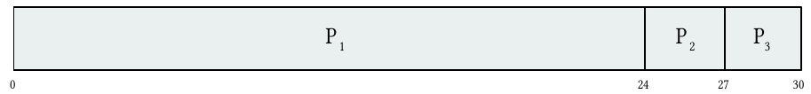
| İş | A | B | S | C | T | W | R |
|---|---|---|---|---|---|---|---|
| P1 | 0 | 24 | 0 | 24 | 24 | 0 | 0 |
| P2 | 0 | 3 | 24 | 27 | 27 | 24 | 24 |
| P3 | 0 | 3 | 27 | 30 | 30 | 27 | 27 |
Ortalama W = 51/3 = 17, ortalama T = 81/3 = 27 sl. 19. Ortalama R = 17. Nonpreemptive ve bütün varışlar 0'da olduğu için her işin ilk gecikmesi aynı zamanda bütün beklemesidir: R = W Okuma §5.
3.3 Aynı işler, başka sıra sl. 20; OSC ch5 sl. 13; Okuma §5#
Sıra P2, P3, P1: | P2 0–3 | P3 3–6 | P1 6–30 |

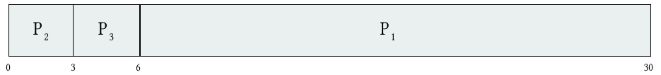
| İş | A | B | S | C | T | W | R |
|---|---|---|---|---|---|---|---|
| P1 | 0 | 24 | 6 | 30 | 30 | 6 | 6 |
| P2 | 0 | 3 | 0 | 3 | 3 | 0 | 0 |
| P3 | 0 | 3 | 3 | 6 | 6 | 3 | 3 |
Ortalama W = 9/3 = 3, ortalama T = 39/3 = 13 sl. 20. İki sıranın da son işi 30'da biter: aynı 30 birim yararlı iş, boşta kalma yok, ek maliyet yok. Değişen şey tek tek bitiş zamanları, dolayısıyla ortalamalardır sl. 20; Okuma §15 S-2. Utilization (30/30) ve throughput (3/30) iki sırada da aynıdır. Aynı throughput, çok farklı ortalama bekleme.
Okumanın alıştırması Okuma §5. P1'in talebi 24 yerine 12 olsa throughput, ortalama bekleme ve ilk yanıt aynı oranda mı değişir? Çizelge | P1 0–12 | P2 12–15 | P3 15–18 |.
| Metrik | P1 = 24 | P1 = 12 | Oran |
|---|---|---|---|
| Throughput | 3/30 = 0,100 | 3/18 ≈ 0,167 | × 1,67 |
| Ortalama W | 17 | 9 | × 0,53 |
| Ortalama T | 27 | 15 | × 0,56 |
| R(P1) | 0 | 0 | değişmez |
Cevap: hayır. Her metrik olay zamanlarını farklı biçimde birleştirir Okuma §5.
3.4 Konvoy etkisi (convoy effect) sl. 21; OSC ch5 sl. 13; Okuma §5#
Tanım. Uzun bir CPU burst'ü birkaç kısa işi arkasında bekletir: "short process behind long process" OSC ch5 sl. 13. Klasik senaryo bir CPU-bound iş ile çok sayıda I/O-bound iştir OSC ch5 sl. 13.
Mekanizma (hocanın ayrımı). Kısa işler CPU'ya geçemedikleri için sıradaki I/O isteklerini de veremezler sl. 21. Sonunda hepsi I/O'ya geçtiğinde CPU'nun yapabileceği yararlı iş azalabilir Okuma §5. Tek burst'lü örnek (3.2) yalnız ilk kuyruk gecikmesini gösterir. Konvoyun cihaz kullanımına etkisini açıklamak için CPU ile I/O birlikte modellenmelidir sl. 21.
Sayısal gösterim ek bilgi. Bu kurgu, hocanın sözlü anlattığı döngüyü sayılarla gösterir; iş yükü uzmanın kendi kurgusudur, denetçi sayıları bağımsız olarak doğruladı.
- C (CPU-bound): CPU 10, I/O 2, CPU 10.
- I1 ve I2 (I/O-bound): CPU 1, I/O 4, CPU 1, I/O 4, CPU 1.
- Hepsi 0'da gelir, sıra C, I1, I2. Tek I/O cihazı var, cihaz da FCFS çalışır.
FCFS:
CPU : | C 0–10 | I1 10–11 | I2 11–12 | C 12–22 | I1 22–23 | I2 23–24 | boş 24–27 | I1 27–28 | boş 28–31 | I2 31–32 |
I/O : | boş 0–10 | C 10–12 | I1 12–16 | I2 16–20 | boş 20–23 | I1 23–27 | I2 27–31 | boş 31–32 |
| İş | A | B (CPU) | I/O hizmeti | cihaz kuyruğu | S | C | T | W (hazır) | R |
|---|---|---|---|---|---|---|---|---|---|
| C | 0 | 20 | 2 | 0 | 0 | 22 | 22 | 0 | 0 |
| I1 | 0 | 3 | 8 | 1 | 10 | 28 | 28 | 16 | 10 |
| I2 | 0 | 3 | 8 | 7 | 11 | 32 | 32 | 14 | 11 |
Kontrol: I1 için W = 28 − 3 − 8 − 1 = 16, I2 için 32 − 3 − 8 − 7 = 14. CPU utilization 26/32 = %81,25, cihaz 18/32 = %56,25. Okuma:
- Cihaz 0–10 arasında boş: I/O-bound işler C'nin arkasında sıkışmış, isteklerini veremiyor.
- C 12–22 arasında CPU'yu yeniden tutarken I1 (16'da döndü) ve I2 (20'de döndü) hazır kuyrukta bekliyor; cihaz 20–23 arasında yine boş.
- Sonda (24–27, 28–31) CPU boş, çünkü herkes I/O'da.
Aynı iş yükü, her CPU burst'ünü ayrı iş sayan SRTF ile OSTEP 7:
CPU : | I1 0–1 | I2 1–2 | C 2–5 | I1 5–6 | C 6–9 | I2 9–10 | C 10–14 | I1 14–15 | boş 15–17 | I2 17–18 | boş 18–19 | C 19–29 |
Makespan 29, CPU 26/29 ≈ %89,7, cihaz 18/29 ≈ %62,1. I1 15'te, I2 18'de biter (FCFS'te 28 ve 32). RR q = 2 ile makespan 31, ortalama T ≈ 22,33 (FCFS'te ≈ 27,33). OSTEP'in ifadesiyle örtüşme (overlap) kullanımı artırır OSTEP 7.
Tuzaklar.
- FCFS'nin sorunu basitliği değil, varış sırasının kısa işlerin deneyimine hükmetmesidir sl. 21. ek bilgi Kuyruk sonluysa ve her burst sonluysa FCFS starvation üretmez.
- Konvoyu tek burst'lü Gantt ile "kanıtlamak" eksik kalır: cihaz kullanımı tarafı görünmez sl. 21.
- "Aynı bitiş zamanı = aynı performans": iki sıra da 30'da biter, ortalama W 17 ile 3 sl. 19–20.
Kontrol soruları
- 3.2 ve 3.3'teki iki FCFS sırası neden aynı anda biter, ama ortalama bekleme neden 17'den 3'e iner?
- Konvoyu göstermek için tek burst'lü bir Gantt neden yetmez? I/O cihazının boş kaldığı aralıkları neyin yarattığını açıkla.
4. SJF, optimallik argümanı, burst tahmini sl. 22–26#
4.1 Tanım sl. 22; OSC ch5 sl. 14; Okuma §6#
Sezgi. Lastik değişimi motor tamirinden önce yapılırsa ortalama bekleme düşer sl. 6.
Tanım. Nonpreemptive SJF (Shortest Job First), hazır işler arasından bir sonraki CPU burst'ü en kısa olanı seçer sl. 22. OSC'ye göre daha doğru ad "shortest-next-CPU-burst"tür OSC ch5 sl. 14.
Mekanizma. CPU her boşaldığında hazır olanlar arasından en kısa burst seçilir. Eşit burst'te verilen sıra geçerlidir. Çalışan iş kesilmez; kesen sürüm SRTF'dir (5. bölüm).
Hocanın iddiası ve kaydı. Birlikte hazır olan sabit bir iş kümesi, bilinen burst uzunlukları ve sıfır ek maliyet varsa SJF ortalama beklemeyi minimize eder. "The claim depends on those assumptions" sl. 22.
4.2 Dört işlik çizelge sl. 23; OSC ch5 sl. 15#
Hepsi 0'da gelir. Burst'ler P1 = 6, P2 = 8, P3 = 7, P4 = 3. Sıra P4, P1, P3, P2; sınırlar 0, 3, 9, 16, 24 sl. 23.
| P4 0–3 | P1 3–9 | P3 9–16 | P2 16–24 |

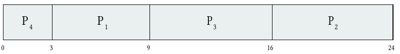
| İş | A | B | S | C | T | W | R |
|---|---|---|---|---|---|---|---|
| P1 | 0 | 6 | 3 | 9 | 9 | 3 | 3 |
| P2 | 0 | 8 | 16 | 24 | 24 | 16 | 16 |
| P3 | 0 | 7 | 9 | 16 | 16 | 9 | 9 |
| P4 | 0 | 3 | 0 | 3 | 3 | 0 | 0 |
Ortalama W = 28/4 = 7 sl. 23. Ortalama T = 52/4 = 13.
4.3 Neden kısa iş önce ortalama beklemeyi düşürür: komşu takas sl. 24; Okuma §6#
Argüman (hoca). Hazır ve komşu iki iş düşün, uzunlukları x ≤ y sl. 24.
- x önce çalışırsa ikinci iş x kadar bekler. Sıra ters çevrilirse ikinci iş y kadar bekler.
- İkili iki sırada da aynı anda biter. Sonraki işler etkilenmez; öncekiler zaten etkilenmez.
- Toplam bekleme farkı y − x ≥ 0'dır. Kısa işi öne almak toplam beklemeyi artıramaz.
- Ters sıradaki komşuları tekrar tekrar takas edince artan burst sırasına (SJF) varılır. Her takas toplamı artırmadığından SJF sırası en iyisidir. Hoca kaydı koyar: "for this simultaneous-arrival model" sl. 24.
ek bilgi Kapalı formül. k'inci sıradaki işin burst'ü kendisinden sonraki n − k işin her birinin beklemesine eklenir: Toplam W = Σ_k (n − k) · b_(k). Büyük katsayılar (n − 1, n − 2, …) en küçük burst'lerle çarpılınca toplam en küçük olur (rearrangement inequality). sl. 23 için kontrol: 3·3 + 2·6 + 1·7 + 0·8 = 9 + 12 + 7 = 28 ✔.
ek bilgi B sabit olduğundan Σ T = Σ W + Σ B. Ortalama beklemeyi minimize etmek ortalama turnaround'u da minimize eder; OSTEP SJF'yi turnaround açısından anlatır OSTEP 7.
4.4 Varsayımlar bozulunca sl. 22; Okuma §6#
SJF'nin optimallik kanıtı eşzamanlı varış, bilinen burst ve sıfır overhead varsayımlarına dayanır. Bunlar bozulunca garanti yoktur sl. 22. Üç kırılma:
- Gelecek varışlar. Gerçek scheduler online çalışır; karar anında gelecekteki varışları bilmez sl. 22.
- ek bilgi Karşı örnek. P1 (A = 0, B = 10), P2 (A = 1, B = 1). Açgözlü nonpreemptive SJF:
| P1 0–10 | P2 10–11 |, W = (0, 9), ortalama 4,5. Geleceği bilen bir çizelge CPU'yu 0–1 arasında bilerek boş bırakır:| boş 0–1 | P2 1–2 | P1 2–12 |, W = (2, 0), ortalama 1. Varsayım bozulunca garanti de gider.
- ek bilgi Karşı örnek. P1 (A = 0, B = 10), P2 (A = 1, B = 1). Açgözlü nonpreemptive SJF:
- Bilinmeyen burst'ler. Bir sonraki burst bilinmez, tahmin edilir (4.6) sl. 22; OSC ch5 sl. 14.
- Starvation (açlık). Sürekli gelen kısa işler uzun hazır işi aç bırakabilir sl. 22. Okuma: bir sabit küme için ortalamayı minimize etmek, süregelen bir iş yükünde açlık olmayacağını kanıtlamaz Okuma §6.
OSC ile fark. OSC "SJF is optimal – gives minimum average waiting time for a given set of processes" der OSC ch5 sl. 14. Kaydı tek ifadeyle bırakır; varış zamanını ve burst bilgisini açıkça yazmaz. Hoca aynı iddiayı üç varsayımla (birlikte hazır, bilinen burst, sıfır overhead) sınırlar sl. 22; sl. 66. Sınavda "SJF is always best" cümlesine hocanın sorusuyla itiraz et: hangi ölçüte göre, hangi varış bilgisiyle ve hangi burst bilgisiyle sl. 66?
ek bilgi SJF bir öncelik politikasıdır: öncelik, tahmin edilen bir sonraki burst'ün tersidir OSC ch5 sl. 25.
4.5 24/3/3 iş yükünde SJF sl. 34#
İlk iş yükünde P2 ile P3'ün eşitliği "P2 before P3" kuralıyla bozulur: | P2 0–3 | P3 3–6 | P1 6–30 |. W = (6, 0, 3), R = (6, 0, 3); iki ortalama da 3. P1 ilk hizmetini 6'da alır sl. 34. Bu, FCFS'nin P2, P3, P1 sırasıyla aynı çizelgedir (3.3). Karşılaştırma 6.6'da.
4.6 Bir sonraki burst'ü tahmin etmek: exponential averaging sl. 25–26; OSC ch5 sl. 16–18; Okuma §6#
Tanım. Gözlenen burst ile önceki tahmin birleştirilir sl. 25:
τ(next) = α × actual + (1 − α) × τ(previous), 0 ≤ α ≤ 1
İz (sl. 25). α = 0,5, τ₀ = 10:
- 6 gözlenir: τ₁ = 0,5·6 + 0,5·10 = 8
- 4 gözlenir: τ₂ = 0,5·4 + 0,5·8 = 6
Uç durumlar. α = 0 yeni kanıtı yok sayar, τ sabit kalır. α = 1 yalnız son burst'ü kullanır sl. 25; OSC ch5 sl. 18. OSC'ye göre α genelde ½ seçilir OSC ch5 sl. 16.
Açılım OSC ch5 sl. 18. τ_{n+1} = α t_n + (1−α) α t_{n−1} + … + (1−α)^j α t_{n−j} + … + (1−α)^{n+1} τ₀. Eski gözlemlerin ağırlığı geometrik olarak azalır. Bu yüzden bütün eski gözlemleri ayrı ayrı saklamak gerekmez Okuma §6.
Davranış değişince sl. 26. Büyük α hızlı tepki verir ama gürültüyü de yakından izler. Küçük α gözlemleri yumuşatır ama yavaş uyum sağlar sl. 26. OSC'nin şeklinde τ₀ = 10, α = ½ ve gözlemler 6, 4, 6, 4, 13, 13, 13; tahminler 10, 8, 6, 6, 5, 9, 11, 12 olur. Tahmin, 4 civarından 13'e sıçramayı gecikmeli izler.

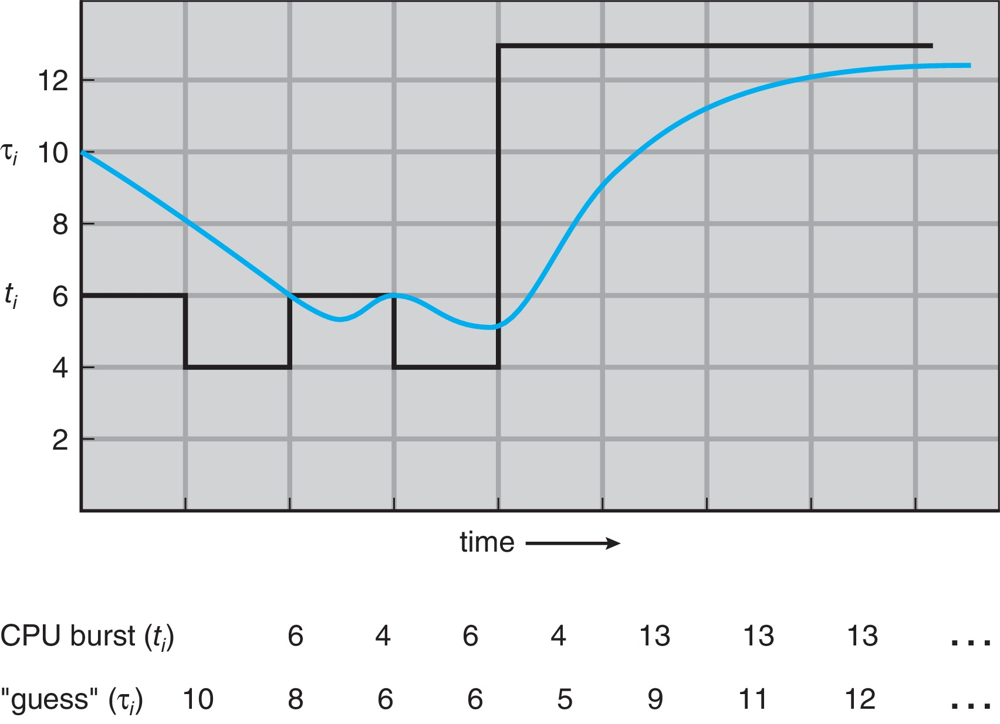
Tuzaklar.
- "SJF her zaman en iyidir": varsayımlar olmadan iddia yoktur sl. 22; sl. 66.
- "Minimum ortalama bekleme = açlık yok": sabit küme ile süregelen iş yükü farklıdır Okuma §6.
- "Tahmin bilinen bir gelecek burst'tür": değildir. En kötü durum yürütme süresi sınırı (WCET, worst-case execution time) da değildir; hard real-time garantisi için kullanılamaz sl. 26.
- "α büyüdükçe tahmin daha iyi olur": hızlı tepki ile gürültü arasında takas var sl. 26.
Kontrol soruları
- Komşu takas argümanında "ikili aynı anda biter" adımı neden kritik? Varışlar farklı zamanlarda olsaydı bu adım nerede bozulurdu?
- α = 0,5 ve τ = 8 iken 12 birimlik bir burst gözleniyor. Yeni tahmin nedir? α = 0,9 ile ne olurdu, bu neyi kazandırır, neyi kaybettirir?
5. SRTF sl. 27–29#
5.1 Tanım ve mekanizma sl. 27; OSC ch5 sl. 19; Okuma §7#
Sezgi. SJF'ye preemption eklenir. Daha kısa bir iş gelirse çalışan iş bırakılır.
Tanım. SRTF (Shortest Remaining Time First), SJF'nin preemptive biçimidir: hazır işler arasından kalan CPU talebi en az olanı seçer sl. 27. OSTEP buna STCF (Shortest Time-to-Completion First) der OSTEP 7.
Mekanizma.
- Hazır kümenin değiştiği her anda (varış, tamamlanma) kalan süreler karşılaştırılır.
- Bir varışta yeni işin burst'ü, çalışan işin orijinal burst'üyle değil, kalan işiyle karşılaştırılır sl. 27.
- Kalan süre tam eşitse çalışan iş devam eder sl. 27.
- Switch maliyeti sıfırdır sl. 27.
5.2 İz: varışlar 0/1/2/3, burst'ler 8/4/9/5 sl. 27–29; OSC ch5 sl. 20#
| t | Olay | Kalanlar (* = çalışan) | Karar |
|---|---|---|---|
| 0 | P1 gelir | P1*:8 | P1 çalışır |
| 1 | P2 gelir (4) | P1*:7, P2:4 | 4 < 7 → P2 preempt eder |
| 2 | P3 gelir (9) | P2*:3, P1:7, P3:9 | P2 devam |
| 3 | P4 gelir (5) | P2*:2, P1:7, P3:9, P4:5 | P2 devam |
| 5 | P2 biter | P1:7, P3:9, P4:5 | P4 seçilir |
| 10 | P4 biter | P1:7, P3:9 | P1 seçilir |
| 17 | P1 biter | P3:9 | P3 seçilir |
| 26 | P3 biter | — | — |
Hoca: 1'de P1'in 7'si kalmış, P2 4 istiyor, P2 preempt eder; 2'de ve 3'te en kısa kalan yine P2'dir. P2 5'te biter; sonra P4 10'a, P1 17'ye, P3 26'ya kadar çalışır sl. 28.
| P1 0–1 | P2 1–5 | P4 5–10 | P1 10–17 | P3 17–26 |

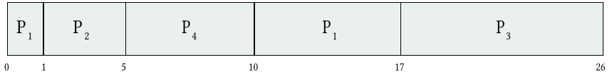
| İş | A | B | S | C | T | W | R |
|---|---|---|---|---|---|---|---|
| P1 | 0 | 8 | 0 | 17 | 17 | 9 | 0 |
| P2 | 1 | 4 | 1 | 5 | 4 | 0 | 0 |
| P3 | 2 | 9 | 17 | 26 | 24 | 15 | 15 |
| P4 | 3 | 5 | 5 | 10 | 7 | 2 | 2 |
Slaytın hesabı sl. 29: C = (17, 5, 26, 10), T = (17, 4, 24, 7). Burst'ler (8, 4, 9, 5) çıkarılınca W = (9, 0, 15, 2), ortalama W = 26/4 = 6,5. İlk başlamalar S = (0, 1, 17, 5), R = (0, 0, 15, 2), ortalama R = 4,25. Ortalama T = 52/4 = 13.
OSC aynı sonucu [(10−1) + (1−1) + (17−2) + (5−3)] / 4 = 26/4 = 6,5 diye yazar OSC ch5 sl. 20. Bu "son başlama − varış − önceden çalışılan süre" yöntemidir ve T − B ile aynı sonucu verir.
5.3 Waiting ve response farklıdır sl. 29; Okuma §7#
P1 hemen yanıt alır (R = 0) ama sonra 9 birim bekler. Hoca: "One metric does not determine the other" sl. 29. P1'in burst'ü iki aralığa bölünmüştür: [0, 1) ve [10, 17). Slayt şeklin P1'in ilk aralığını koruduğunu özellikle söyler sl. 28.
Kontrol listesi Okuma §7. Her işin toplam çalışma süresi B'ye eşit olmalı; hiçbir iş varışından önce çalışmamalı.
5.4 Aynı iş yükünde öbür politikalar ek bilgi#
| Politika | Gantt | Ort. W | Ort. T | Ort. R |
|---|---|---|---|---|
| FCFS | P1 0–8, P2 8–12, P3 12–21, P4 21–26 |
8,75 | 15,25 | 8,75 |
| SJF (np) | P1 0–8, P2 8–12, P4 12–17, P3 17–26 |
7,75 | 14,25 | 7,75 |
| SRTF | yukarıdaki | 6,5 | 13 | 4,25 |
| RR q = 4 | P1 0–4, P2 4–8, P3 8–12, P4 12–16, P1 16–20, P3 20–24, P4 24–25, P3 25–26 |
11,75 | 18,25 | 4,5 |
Nonpreemptive SJF'nin 7,75'i OSC kitabındaki değerle aynıdır. RR yanıtta iyi, beklemede ve turnaround'da kötüdür. Bu iş yükünde SRTF hem bekleme hem yanıt açısından en iyisidir.
5.5 SRTF optimal mi, eşitlik kuralı neyi değiştirir? OSC ch5 sl. 19; OSTEP 7#
OSC sorar: SRTF, verilen bir küme için SJF'den "daha optimal" mi OSC ch5 sl. 19? OSTEP: burst'ler biliniyorsa, varışlar olduğu anda görülüyorsa ve switch maliyeti sıfırsa STCF ortalama turnaround'u minimize eder ("provably optimal") OSTEP 7. Gerçekte üç bedeli vardır: switch maliyeti, burst'ün yine tahmin edilmesi ve uzun işlerin starvation riski.
ek bilgi Kalan süreler tam eşitse iki iş hangi sırayla biterse bitsin tamamlanma anlarının kümesi aynıdır ({t + x, t + 2x}). Bu yüzden eşitlik kuralı ortalama T ve W'yi değiştirmez; değişen R, tek tek işlerin değerleri ve switch sayısıdır. Sınavda hocanın kuralını uygula: mevcut iş devam eder sl. 27.
Tuzaklar.
- Yeni işi çalışan işin orijinal burst'üyle karşılaştırmak (en sık hata) sl. 27.
- Varışta kesilen işin ilk aralığını unutmak sl. 28.
- R ile W'yi aynı sanmak sl. 29.
- Eşitlikte keyfi kural seçmek: hocanın kuralı "çalışan kalır" sl. 27.
Kontrol soruları
- t = 1'de P1'in 7 birimi kalmış ve P2 4 istiyor. P2'nin burst'ü 7 olsaydı ne olurdu? 8 olsaydı?
- P1'in R = 0 ve W = 9 olmasını çizelgeden adım adım göster. Ortalama R hangi ihtiyacı, ortalama W hangisini ölçer?
6. Round robin ve birinci yarı karşılaştırması sl. 30–35#
6.1 Tanım ve (n − 1)q sınırı sl. 30; OSC ch5 sl. 21–22; Okuma §8#
Sezgi. Her müşteriye sırayla kısa bir dilim hizmet. Burst tahmini gerekmez.
Tanım. Çalışabilir bir iş en fazla q (time quantum, zaman dilimi) kadar çalışır. İşi kalmışsa kuyruğun sonuna döner. Erken bloklanan ya da biten iş quantum'un tamamını harcamadan CPU'yu bırakır sl. 30. Timer her quantum'da kesme üretir OSC ch5 sl. 21. q tipik olarak 10–100 ms, context switch < 10 µs OSC ch5 sl. 22. ek bilgi OSTEP'e göre quantum, timer kesme periyodunun katı olmalıdır OSTEP 7.
Mekanizma.
- Kuyruğun başındaki işi al, timer'ı q'ya kur.
- İş q dolmadan biterse ya da bloklanırsa kuyruğun başındaki sıradaki işe geç.
- q dolarsa ve işin kalanı varsa kuyruğun sonuna koy; sıradaki işi al.
- q dolduğunda kuyrukta başka iş yoksa aynı iş devam eder; task-to-task switch olmaz sl. 32.
(n − 1)q sınırı. Hoca: n eşit akran sürekli çalışabilir durumdaysa, ek maliyet sıfırsa ve dışarıdan varış yoksa, bir işin iki sırası arasındaki boşluk en fazla (n − 1)q'dur sl. 30. OSC aynı şeyi "No process waits more than (n−1)q time units" diye söyler OSC ch5 sl. 21. Bu daha gevşek bir ifadedir ve kolayca yanlış okunur.
Sınırı bozan şeyler sl. 30: ek maliyet, daha yüksek öncelikli iş, değişen hazır kümesi (yeni varışlar n'i büyütür).
ek bilgi Karşı örnek: sınır tur arası boşluk içindir, toplam bekleme için değil. Üç iş, her biri 12 birim, q = 4:
| A 0–4 | B 4–8 | C 8–12 | A 12–16 | B 16–20 | C 20–24 | A 24–28 | B 28–32 | C 32–36 |.
(n − 1)q = 8 ve her boşluk ≤ 8. Ama toplam W = (16, 20, 24); hepsi 8'den büyük.
ek bilgi Switch maliyeti s eklenirse: X'in dilimi biter → s → akran 1, q → s → … → akran n − 1, q → s → X başlar. Boşluk = (n − 1)q + n·s olur.
6.2 q = 4, iş yükü 24/3/3 sl. 31; OSC ch5 sl. 22; Okuma §8#
| t | Olay | Kuyruk (baş → son) | Çalışan |
|---|---|---|---|
| 0 | hepsi gelir | P1, P2, P3 | P1 (0–4) |
| 4 | P1'in quantum'u biter | P2, P3, P1 | P2 (4–7; 3 < 4, erken biter) |
| 7 | P2 biter | P3, P1 | P3 (7–10) |
| 10 | P3 biter | P1 | P1 (10–30) |
| P1 0–4 | P2 4–7 | P3 7–10 | P1 10–30 |

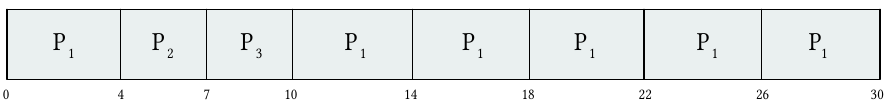
| İş | A | B | S | C | T | W | R |
|---|---|---|---|---|---|---|---|
| P1 | 0 | 24 | 0 | 30 | 30 | 6 | 0 |
| P2 | 0 | 3 | 4 | 7 | 7 | 4 | 4 |
| P3 | 0 | 3 | 7 | 10 | 10 | 7 | 7 |
Ortalama W = 17/3 ≈ 5,67, ortalama R = 11/3 ≈ 3,67 sl. 31. Ortalama T = 47/3 ≈ 15,67.
İnce nokta. OSC'nin şekli 14, 18, 22 ve 26'da quantum sınırlarını işaretler. Ama yalnız P1 kaldığı için bu sınırlar başka bir işe geçiş anlamına gelmez sl. 32; Okuma §8.
6.3 Küçük quantum'un bedeli: q/(q + s) sl. 32; OSC ch5 sl. 23; Okuma §8#
Orijinal şekil 10 birimlik yararlı işi küçülen quantum'lara böler ve olası preemption sınırlarını sayar sl. 32. q = 12'de 0, q = 6'da 1, q = 1'de 9 sınır vardır. Başka çalışabilir iş yoksa quantum dolması bir task-to-task switch'e dönüşmek zorunda değildir sl. 32.

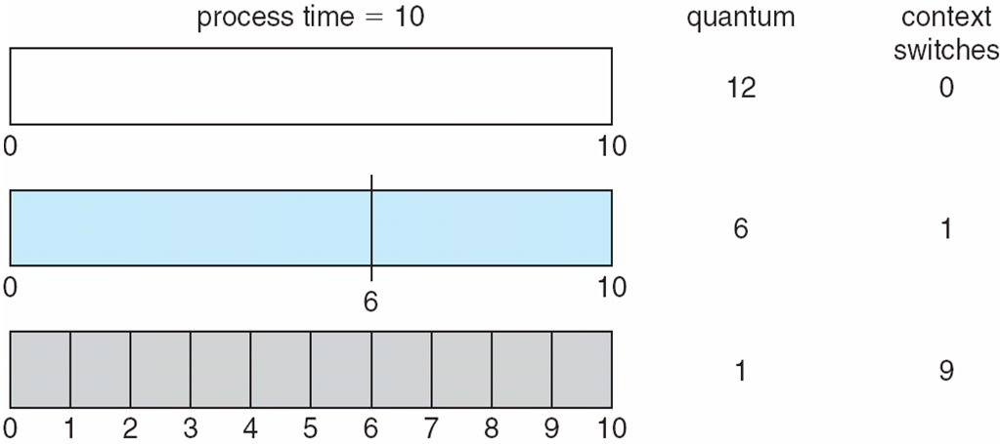
Formül. Doymuş, dönüşümlü çalışan bir iş yükünde her q yararlı dilimi bir s switch'i izler. Yararlı oran ≈ q / (q + s) sl. 32:
- q = 4 ms, s = 0,2 ms: 4 / 4,2 = %95,24 sl. 32.
- q = 1 ms, aynı s: 1 / 1,2 = %83,33 Okuma §8.
- OSTEP: 10 ms dilim ve 1 ms switch ile zamanın yaklaşık %10'u kaybolur; 100 ms dilimle %1'in altına iner. Buna amortization (amortisman) der OSTEP 7. (Tam hesap: 1/11 ≈ %9,1 kayıp.)
Bunlar basit bir modelin varsayılan maliyetleridir, Ubuntu ölçümü değildir Okuma §8.
6.4 Quantum ve turnaround sl. 33; OSC ch5 sl. 24; Okuma §8#
Hoca: ders kitabının iş yükünde ortalama turnaround q ile monoton değişmez. Çok büyük q FCFS'e yaklaşır. Çok küçük q zamanın önemli kısmını switch'e harcayabilir. Quantum iş yüküne ve gecikme hedeflerine göre seçilir; ders kitabının pratik kuralı evrensel bir Linux ayarı değildir sl. 33.

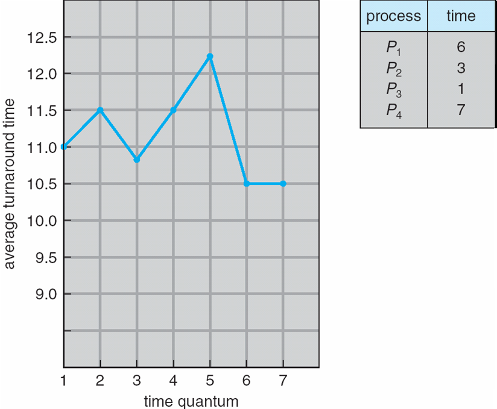
ek bilgi Şekildeki iş yükü (OSC kitabı). P1 = 6, P2 = 3, P3 = 1, P4 = 7, hepsi 0'da, switch maliyeti sıfır.
| q | 1 | 2 | 3 | 4 | 5 | 6 | 7 |
|---|---|---|---|---|---|---|---|
| Ort. T | 11,0 | 11,5 | 10,75 | 11,5 | 12,25 | 10,5 | 10,5 |
Değerler iner, çıkar: monoton değil. q ≥ 7'de her iş ilk turunda biter ve RR, FCFS'e eşit olur (6, 9, 10, 17 → 42/4 = 10,5). Neden: q değişince işlerin bittiği sınırlar değişir, bu da sonraki kuyruk konumlarını değiştirir Okuma §8.
Pratik kural: "80% of CPU bursts should be shorter than q" OSC ch5 sl. 24. Hoca bunun evrensel olmadığını vurgular sl. 33.
q her burst'ten büyükse Okuma §15 S-3. Hepsi 0'da hazır, tek burst'lü iş yükünde (24/3/3'te q ≥ 24) işler ilk turlarında biter; sıra ve zamanlama FCFS ile birebir aynıdır. Varış, bloklanma ya da başka politika katmanları varsa koşullar yeniden yazılmalıdır.
6.5 Quantum sınırında eşzamanlı varış Okuma §8#
t anında hem yeni bir iş geliyor hem de çalışan işin quantum'u bitiyorsa hangisi kuyrukta önde olur?
- Hoca: "a complete specification must say how arrivals at a quantum boundary are ordered" Okuma §8. Bir kural vermez, kuralın yazılmasını ister.
- OSC: kesilen iş "added to the end of the ready queue" OSC ch5 sl. 21. Eşzamanlı varışla sırası tanımlı değil.
- ek bilgi Yaygın ders kitabı uzlaşımı: önce yeni gelen kuyruğa girer, quantum'u biten arkasına eklenir. Gerekçe: varış t anında gerçekleşmiş bir olaydır, kesilen iş kesme işlendikten sonra eklenir. Bazı kaynaklar tersini kullanır. İki kural aynı iş yükünde farklı ortalamalar verebilir (soru bankasında örnekleri var).
Sınav tavsiyesi. Kuralı cevabın başına yaz: "Varsayım: aynı t'de yeni gelen, quantum'u biten işten önce kuyruğa girer."
6.6 Aynı iş yükünde karşılaştırma sl. 34#
24/3/3, hepsi 0'da:
| Politika | Ort. W | Ort. R | Ort. T | En büyük W | Son bitiş |
|---|---|---|---|---|---|
| FCFS (P1, P2, P3) | 17 | 17 | 27 | 27 | 30 |
| SJF (P2 önce P3) | 3 | 3 | 13 | 6 | 30 |
| RR q = 4 | 5,67 | 3,67 | 15,67 | 7 | 30 |
- Sıfır ek maliyetle üçü de 30'da biter sl. 34.
- SJF ortalamada en iyisidir, ama P1 ilk hizmetini 6'da alır. RR'de her iş 7'ye kadar hizmet görür sl. 34; Okuma §8.
- "The preferred policy depends on the objective" sl. 34. OSC'ye göre RR'nin turnaround'u SJF'den genelde yüksektir, yanıtı daha iyidir OSC ch5 sl. 22. OSTEP'e göre RR turnaround açısından "nearly pessimal"dır; adil ve küçük ölçekte eşit paylaştıran her politika turnaround'da kötüdür OSTEP 7.
6.7 Birinci yarı kontrol noktası sl. 35#
Hocanın üç maddesi sl. 35:
- P1 hemen başlayıp sonra preempt edilirse yanıtı sıfır, beklemesi pozitif olabilir mi? Evet (SRTF'de P1: R = 0, W = 9).
- %100 CPU kullanımı iyi yanıt anlamına gelir mi? Hayır. Bir uzun iş CPU'yu meşgul tutarken öbürleri bekler (FCFS 24/3/3: U = 1, ortalama R = 17).
- Algoritmaları karşılaştırırken iş yükünü ve varsayımları sabit tut. Her varışı, preemption'ı ve tamamlanmayı işaretle.
Linux'ta nasıl görünür. Linux'un SCHED_RR politikası aynı öncelikteki real-time akranlar arasında zaman dilimler sl. 61; ayrıntı 12.3'te. Normal (fair) sınıfta sabit bir quantum yoktur.
Tuzaklar.
- "(n − 1)q toplam bekleme sınırıdır": tur arası boşluk sınırıdır; ek maliyet, öncelik ya da yeni varış varsa o da geçerli değildir sl. 30.
- "Quantum dolunca switch olur": başka hazır iş yoksa olmaz sl. 32.
- "Küçük quantum her zaman daha iyi": q/(q + s) düşer, turnaround monoton değişmez sl. 32–33.
- "%80 kuralı Linux'un ayarıdır": değildir sl. 33.
- "RR adil, demek ki en iyi": hedef turnaround ise SJF kazanır sl. 34.
Kontrol soruları
- Dört eşit akran, q = 5, switch maliyeti 1. Bir işin iki sırası arasındaki en büyük boşluk nedir? Beşinci bir iş gelirse ne değişir?
- 24/3/3 iş yükünde RR q = 4, SJF'den daha kötü ortalama bekleme veriyor, ama P1 SJF'de ilk hizmetini 6'da, RR'de 0'da alıyor. Hangi hedef hangi politikayı seçtirir?
7. Öncelik, starvation, aging, multilevel queue, MLFQ sl. 36–42#
7.1 İkinci yarıya geçiş sl. 36#
Birinci yarı tek bir CPU'yu varış sırası, süre ve zaman dilimiyle paylaştırdı. Şimdi üç şey ekleniyor: önem (importance), değişen davranış ve birden çok yürütme kaynağı. Real-time işte tamamlanmış bir sonuç ancak deadline'dan önce gelirse yararlı olabilir sl. 36.
7.2 Öncelik zamanlaması sl. 37–38; OSC ch5 sl. 25–27; Okuma §9#
Tanım. Her hazır işe bir öncelik atanır, en yüksek öncelikli uygun iş seçilir sl. 37. Öncelikler sabit ya da dinamik olabilir. Politika preemptive ya da nonpreemptive olabilir sl. 37; Okuma §9.
Sayısal yön. Ders örneğinde küçük sayı yüksek önceliktir. Linux real-time API öncelikleri ters yönde sayar sl. 37. Yön girdinin parçasıdır, tahmin edilmez; girdinin yanına "küçük = yüksek" yaz Okuma §9. (Linux'taki dört ayrı ölçek 12.4'te.)
Eşit öncelik. Eşit öncelikli işlerin CPU'yu nasıl paylaşacağı belirtilmelidir sl. 37. OSC'nin seçeneği aynı öncelikte RR'dir OSC ch5 sl. 27.
İz (sl. 38). Hepsi 0'da. Burst'ler P1…P5 = (10, 1, 2, 1, 5), öncelikler (3, 1, 4, 5, 2), küçük = yüksek. Nonpreemptive sıra P2 (1) → P5 (2) → P1 (3) → P3 (4) → P4 (5); sınırlar 0, 1, 6, 16, 18, 19 sl. 38.
| P2 0–1 | P5 1–6 | P1 6–16 | P3 16–18 | P4 18–19 |

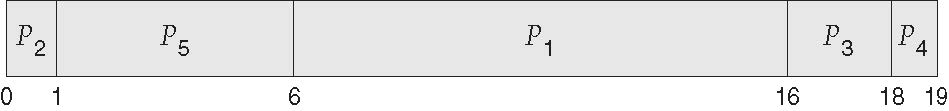
| İş | B | Öncelik | S | C | T | W | R |
|---|---|---|---|---|---|---|---|
| P1 | 10 | 3 | 6 | 16 | 16 | 6 | 6 |
| P2 | 1 | 1 | 0 | 1 | 1 | 0 | 0 |
| P3 | 2 | 4 | 16 | 18 | 18 | 16 | 16 |
| P4 | 1 | 5 | 18 | 19 | 19 | 18 | 18 |
| P5 | 5 | 2 | 1 | 6 | 6 | 1 | 1 |
Ortalama W = 41/5 = 8,2 sl. 38. Ortalama T = 60/5 = 12. Yön ters alınırsa (büyük = yüksek) sıra P4, P3, P1, P5, P2 olur ve sonuç tamamen değişir Okuma §9.
OSC'nin öncelik + RR örneği (q = 2) OSC ch5 sl. 27. Hepsi 0'da. P1 (burst 4, öncelik 3), P2 (5, 2), P3 (8, 2), P4 (7, 1), P5 (3, 3). Aynı öncelikliler RR ile dönüşür.
| P4 0–7 | P2 7–9 | P3 9–11 | P2 11–13 | P3 13–15 | P2 15–16 | P3 16–20 | P1 20–22 | P5 22–24 | P1 24–26 | P5 26–27 |
W = (22, 11, 12, 0, 24), ortalama 69/5 = 13,8. P4 tek başına en yüksek öncelikte olduğu için quantum'u 2, 4 ve 6'da dolsa da kimseye geçmez; 0–7 boyunca kesintisiz çalışır (6.2'deki "quantum sınırı switch değildir" noktası).
7.3 Starvation ve aging sl. 39; OSC ch5 sl. 25; Okuma §9#
- Starvation (açlık): yüksek öncelikli hazır işlerin sonu gelmeyen akışı düşük öncelikli bir işin hiç çalışmasına izin vermeyebilir sl. 39. Uygun bir iş süresiz ertelenirken öbürleri hizmet almaya devam eder Okuma §9. ek bilgi, OSC kitabı anekdotu MIT'deki IBM 7094 1973'te kapatıldığında 1967'de gönderilmiş, hiç çalışmamış düşük öncelikli bir process bulunduğu anlatılır.
- Aging (yaşlandırma): bekleyen işlerin önceliği zamanla kademeli olarak yükseltilir sl. 39; OSC ch5 sl. 25. Hoca: gerçek ilerleme garantisi politikaya ve iş yüküne bağlıdır sl. 39; okumaya göre önceliklerin ne hızla değiştiğine, eşitliklerin nasıl bozulduğuna ve ne kadar yüksek öncelikli yük kabul edildiğine Okuma §9. ek bilgi Öncelikler 127 (düşük) ile 0 (yüksek) arasındaysa ve her saniye 1 artıyorsa, 127'deki iş en geç 127 saniyede en üste çıkar. Orada da eşitlik kuralı ve aynı seviyedeki rakipler belirleyicidir.
- Tuzak: "Round robin within one priority level does not stop starvation caused by higher-priority levels" sl. 39. RR yalnız akranlar arasında adalet sağlar.
7.4 Multilevel queue sl. 40; OSC ch5 sl. 28–30; Okuma §9#
Tanım. Hazır kuyruk birden çok kuyruğa ayrılır, işler sınıflara atanır; zamanlama hem kuyruk içinde hem kuyruklar arasında yapılır sl. 40. Bir multilevel queue scheduler'ını tanımlayan parametreler OSC ch5 sl. 28:
- kuyruk sayısı,
- her kuyruğun algoritması,
- bir işin hangi kuyruğa gireceğini belirleme yöntemi,
- kuyruklar arası zamanlama.
Öncelik zamanlamasının bir biçimi her öncelik için ayrı kuyruktur OSC ch5 sl. 29; bir başkası süreç tipine göre önceliklendirmedir (real-time, system, interactive, batch) OSC ch5 sl. 30.
- Tuzak: kuyruklar arasında katı öncelik varsa her kuyruk içeride RR kullansa bile alt kuyruk aç kalabilir sl. 40.
- ek bilgi, OSC kitabı Alternatif: kuyruklar arası zaman dilimleme. Örnek: CPU'nun %80'i ön plan (RR), %20'si arka plan (FCFS).
- Sabit multilevel queue'da iş sınıfını değiştirmez. Feedback tasarımında gözlenen davranışı değiştikçe kuyruklar arasında taşınabilir sl. 40.
7.5 Multilevel feedback queue (MLFQ) sl. 41–42; OSC ch5 sl. 31–32; OSTEP 8; Okuma §9#
Sezgi. Scheduler işin uzunluğunu bilmez. Önce her işin kısa olabileceğini varsayıp yüksek öncelik verir. İş uzun çıkarsa yavaş yavaş aşağı iner. Böylece SJF'ye bilgi olmadan yaklaşır; geçmiş davranış geleceğin tahmini olarak kullanılır OSTEP 8. MLFQ kesin bir gelecek burst değeri istemez, yakın geçmişteki hizmeti kanıt olarak kullanır Okuma §9.
Tanım (OSC). İşler kuyruklar arasında hareket edebilir. Parametreler: kuyruk sayısı, her kuyruğun algoritması, yükseltme (upgrade) yöntemi, düşürme (demote) yöntemi ve yeni işin hangi kuyruğa gireceği. "Aging can be implemented using MLFQ" OSC ch5 sl. 31.
Hocanın politikası (8/16/FCFS) sl. 41; OSC ch5 sl. 32:
- Yeni iş Q0'a girer: RR, q = 8.
- 8 birimi tamamen kullanıp bitmezse Q1'e iner: RR, q = 16.
- 16 birim daha kullanıp bitmezse Q2'ye iner: FCFS.
- Üstteki kuyruklar önceliklidir sl. 41. ek bilgi, OSC kitabı Q2 yalnız Q0 ve Q1 boşken çalışır; Q0'a gelen iş Q1'dekini, Q1'e gelen Q2'dekini keser.

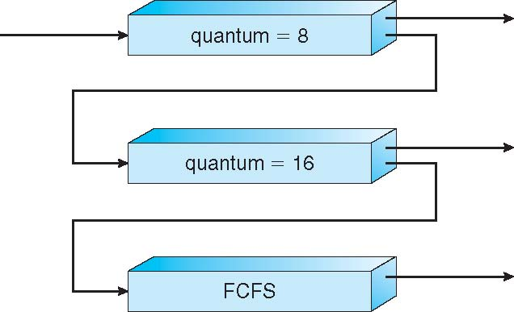
Hoca bunun belirtilmiş bir öğretim politikası olduğunu vurgular: tam bir uygulama terfi, I/O dönüşü ve boost kurallarını da tanımlamalıdır sl. 41.
İz (sl. 42): tek başına 30 birimlik iş. Q0'da 8, Q1'de 16 harcar, Q2'ye 6 kalır: | A 0–8 (Q0) | A 8–24 (Q1) | A 24–30 (Q2) |, C = 30 sl. 42. Hoca: "Queue changes alone do not add useful work." Rakip yoksa ve ek maliyet sıfırsa iş FCFS'teki gibi 30'da biter; gecikmeyi üst kuyruklardan gelen rekabet ekler sl. 42; Okuma §9.
Rakipli MLFQ için hocanın iki kuralı sl. 42.
- Bir seviyedeki toplam CPU payını (allotment) say. Yoksa iş, düşürülmeden hemen önce CPU'yu bırakarak politikayı oyunlayabilir (game).
- Periyodik öncelik yükseltmeleri (priority boost) uzun süre bekleyen işin yeniden hizmet almasına yardım eder.
OSTEP'in kuralları OSTEP 8. İlk deneme:
- Kural 1: Priority(A) > Priority(B) ise A çalışır, B çalışmaz.
- Kural 2: öncelikler eşitse A ile B RR'de paylaşır.
- Kural 3: sisteme giren iş en üst kuyruğa konur.
- Kural 4a: iş allotment'ını (bir seviyede harcayabileceği süre) çalışırken bitirirse bir alt kuyruğa iner.
- Kural 4b: allotment bitmeden CPU'yu bırakırsa (ör. I/O ile) aynı seviyede kalır ve allotment'ı sıfırlanır.
Bu ilk sürümün üç kusuru OSTEP 8: (1) starvation: çok sayıda etkileşimli iş bütün CPU'yu tüketir; (2) gaming: allotment bitmeden I/O yapan iş üst kuyrukta kalır, CPU'yu neredeyse tekeline alabilir; (3) davranış değişimi: CPU-bound iken etkileşimli hâle gelen iş aşağıda kalır. Düzeltmeler:
- Kural 5 (priority boost): her S sürede bütün işler en üst kuyruğa taşınır. Hem açlığı çözer hem davranışı değişen işe yeni şans verir.
- Kural 4 (yeni muhasebe): iş bir seviyedeki toplam allotment'ını bitirince, CPU'yu kaç kez bırakmış olursa olsun, bir alt kuyruğa iner.
Hocanın sl. 42'deki iki cümlesi tam bu iki düzeltmedir. Ayar soruları (kaç kuyruk, kuyruk başına ne kadar dilim, ne sıklıkta boost) için kolay cevap yoktur; S, Ousterhout'un "voo-doo constant" dediği türden bir sabittir: çok büyükse uzun işler aç kalır, çok küçükse etkileşimli işler payını alamaz OSTEP 8. Notasyon farkı: OSTEP'te en üst kuyruk Q2, hocada ve OSC'de Q0'dır.
ek bilgi Gaming, sayılarla. 8/16/FCFS. L (0'da gelir, 40 birim CPU) ve G (0'da gelir, 7 birim çalış, 1 birim I/O döngüsü, toplam 49 CPU birimi). I/O paralel.
- Kural 4b ile (allotment I/O'da sıfırlanır): G hiç 8'e ulaşmaz, sonsuza dek Q0'da kalır. L yalnız G'nin 1 birimlik I/O aralıklarında çalışır.
| L 0–8 | G 8–15 | L 15–16 | G 16–23 | L 23–24 | … | G 56–63 | L 63–89 |G ilk 60 birimin 46'sını alır (%77). L ancak 89'da biter. - Yeni Kural 4 ile (seviye başına toplam muhasebe): G, 7 + 1 = 8 birimde Q1'e, sonra Q2'ye iner.
| L 0–8 | G 8–15 | L 15–16 | G 16–17 | L 17–32 | G 32–38 | … | L 50–64 | G 64–68 | … | G 85–92 |G ilk 60 birimin 24'ünü alır (%40). L 64'te, G 92'de biter.
ek bilgi Starvation ve priority boost, sayılarla. OSTEP'in ilk kuralları (Kural 4b). L 0'da gelir, 30 birim CPU ister. I1 ve I2 4'te gelir; her biri 16 kez 3 birim CPU kullanır, aralarda 1 birim I/O yapar (toplam 48 CPU birimi, I/O paralel). İkisi dönüşümlü olarak Q0'ı hep dolu tutar.
- Boost yok: L 0–8 arasında çalışır (4'te gelen I'lar aynı seviyede olduğu için kesmez), Q1'e iner ve 104'e kadar hiç CPU alamaz. 126'da biter.
- S = 30 ile boost. Boost kuralı: her 30 birimde bekleyen bütün işler Q0'ın sonuna taşınır ve allotment'ları sıfırlanır; o an çalışan iş kesilmez, yalnız allotment'ı sıfırlanır. L, 32–40, 64–72 ve 93–99 aralıklarında Q0'dan pay alır ve 99'da biter. (Boost anında çalışan işi kuyruğun sonuna atan başka bir kural L'ye 30–38, 63–71 ve 93–99 aralıklarını verir; bitiş yine 99. Boost kuralı da hocanın "tanımlanmalı" dediği kurallardandır sl. 41.)
Linux'ta nasıl görünür. Linux'un fair sınıfı MLFQ değildir; öncelik ve paylaşımı nice ağırlıklarıyla yapar (12.1–12.2). Real-time sınıfının statik öncelikleri ise hep fair sınıfın önündedir; bu, 7.4'teki "kuyruklar arası katı öncelik" yapısının gerçek bir örneğidir (12.3).
Tuzaklar.
- Öncelik yönünü girdiden okumamak: küçük = yüksek ders örneğine özgüdür sl. 37.
- "Eşit öncelikte ne olacağı belli": belirtilmelidir sl. 37.
- "Aging ilerlemeyi garanti eder": garanti değişim hızına, eşitlik kuralına ve yüksek öncelikli yüke bağlıdır sl. 39; Okuma §9.
- "Her kuyrukta RR var, açlık olmaz": kuyruklar arası katı öncelik alt kuyruğu aç bırakabilir sl. 40.
- "MLFQ'da kuyruk değişikliği işi uzatır": tek başına yararlı iş eklemez sl. 42.
- "Allotment'ı her I/O'da sıfırlamak adil": oyunlamaya açıktır; toplam muhasebe gerekir sl. 42.
Kontrol soruları
- sl. 38'deki iş yükünde politika preemptive olsaydı çizelge değişir miydi? Neden (varışlara bak)?
- Hocanın 8/16/FCFS politikasında bir iş her seferinde 7,9 birim çalışıp I/O yapıyor. Allotment I/O'da sıfırlanıyorsa ne olur? Hocanın sl. 42'deki hangi cümlesi bunu önler?
8. Çok çekirdek: ne zamanlanır, kuyruklar, affinity, NUMA, SMT sl. 43–46#
8.1 Ne zamanlanır? sl. 43; OSC ch5 sl. 33–34; Okuma §10#
Sezgi. "İşlemci süreçleri zamanlar" demek kaba bir sadeleştirmedir. Çekirdeğin elindeki birim, çalıştırılabilir bir yürütme bağlamıdır (execution context): kendi register kümesi ve yığını olan bir akış.
Tanım. Çekirdek çalıştırılabilir yürütme bağlamlarını zamanlar. Kernel destekli thread'lerin olduğu sistemde CPU için yarışan şey thread'lerdir sl. 43. OSC aynı şeyi "threads scheduled, not processes" diye söyler OSC ch5 sl. 33.
Mekanizma: iki katmanlı karar.
- Çekirdek katmanı: hangi kernel thread'i hangi mantıksal CPU'da çalışacak? OSC buna system-contention scope (SCS) der: yarış sistemdeki bütün thread'ler arasındadır OSC ch5 sl. 33.
- Kullanıcı katmanı: bir user-level runtime (thread kütüphanesi, green thread, coroutine çalıştırıcısı) kendisine verilen kernel thread süresinin içinde bir zamanlama kararı daha verebilir sl. 43. OSC bunu process-contention scope (PCS) diye adlandırır OSC ch5 sl. 33.
- Çekirdek her user-level görevi ayrı bir çalıştırılabilir varlık olarak otomatik görmez Okuma §10.
- Pthreads
PTHREAD_SCOPE_PROCESS(PCS) ilePTHREAD_SCOPE_SYSTEM(SCS) arasında seçim sunar; Linux ve macOS yalnızPTHREAD_SCOPE_SYSTEM'e izin verir OSC ch5 sl. 34. - Sanal makinede bir katman daha vardır: misafir (guest) çekirdeğin kararı, host'un sanal CPU'ları (vCPU) ne zaman çalıştırdığına bağlıdır Okuma §10.
Paralellik kuralı. Birden çok çalıştırılabilir thread'i olan bir process, izin verilen birkaç mantıksal CPU'yu aynı anda kullanabilir. Tek bir thread ise bir anda yalnız bir mantıksal CPU'da çalışır sl. 43.
Örnek. 4 thread'li bir process 2 mantıksal CPU'lu makinede: en fazla 2 thread aynı anda ilerler, öbür 2'si hazır kuyrukta bekler. Aynı process tek kernel thread'i üzerinde 100 coroutine çalıştırıyorsa çekirdek açısından 1 çalıştırılabilir varlık vardır; 8 CPU'da bile paralel ilerleme olmaz.
8.2 Tek ortak kuyruk mu, CPU başına kuyruk mu? sl. 44; OSC ch5 sl. 38, 43; Okuma §10#
Sezgi. Tek bekleme salonu adildir ama kapıda itişme olur. Her ustanın kendi sırası varsa itişme biter, ama bir usta boş otururken öbürünün sırası uzayabilir.
Tanım. SMP'de (symmetric multiprocessing) her işlemci kendi zamanlamasını yapar. Thread'ler ya ortak bir ready queue'da ya da her işlemcinin özel (per-CPU) kuyruğunda durur OSC ch5 sl. 38.

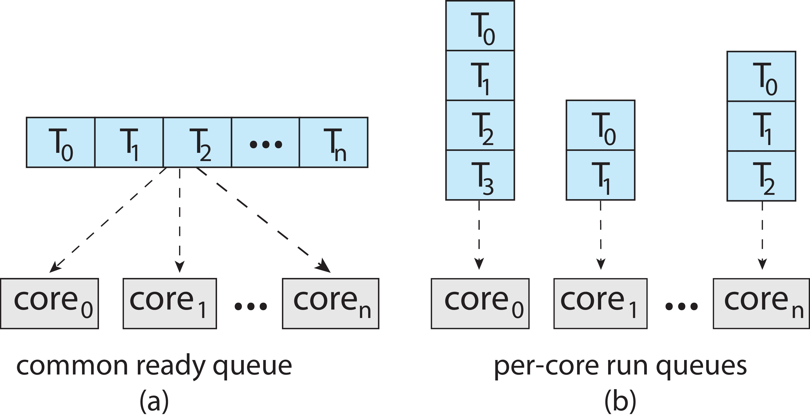
| Ortak ready queue | CPU başına kuyruk | |
|---|---|---|
| Seçim | kavramsal olarak basit, küresel | yerel |
| Maliyet | paylaşılan yapıda çekişme (contention) | paylaşılan erişim azalır |
| Önbellek | thread her seferinde başka CPU'ya düşebilir | yerellik (locality) korunur |
| Risk | kilit darboğazı | dengesizlik (imbalance) |
sl. 44; Okuma §10
Load balancing (yük dengeleme). Per-CPU kuyrukların dengesizliğini düzeltmek için iş taşınır sl. 44. OSC iki yöntem sayar OSC ch5 sl. 43:
- Push migration: periyodik bir görev her işlemcinin yükünü kontrol eder, aşırı yüklü CPU'dan öbürlerine thread iter.
- Pull migration: boşta kalan işlemci meşgul bir işlemcinin bekleyen thread'ini çeker.
- İkisi birbirini dışlamaz ek bilgi: OSC kitap metni Linux ve FreeBSD'nin ikisini birlikte kullandığını söyler.
Affinity ile gerilim. Load balancing işi taşır; affinity önceden ısınmış önbelleğin faydasını korumaya çalışır sl. 44. İkisi ters yönde çeker Okuma §10.
8.3 Fiziksel çekirdek, mantıksal CPU, SMT sl. 45; OSC ch5 sl. 39–42; Okuma §10#
Sezgi. Bir usta parça beklerken elini başka bir arabaya uzatabilir. Ama ortada hâlâ bir usta vardır.
Tanımlar.
- Fiziksel çekirdek (physical core) ile işletim sisteminin gördüğü mantıksal CPU (logical CPU) farklı birimlerdir sl. 45.
- Donanım thread'i (hardware thread): bir çekirdekte birden çok mimari durumun (register kümesi) tutulması. OSC buna chip multithreading (CMT) der; Intel'in adı hyper-threading'dir OSC ch5 sl. 41. Genel adı SMT, simultaneous multithreading ek bilgi.
- Aynı çekirdekteki donanım thread'leri yürütme kaynaklarını paylaşır sl. 45.
Mekanizma: memory stall. Bir thread belleğe erişip veriyi beklerken çekirdek boşta kalır (memory stall). Çekirdekte ikinci bir donanım thread'i varsa çekirdek o sırada öbür thread'le ilerleyebilir OSC ch5 sl. 39–40. Hocanın compute/stall diyagramı bu örtüşmeyi motive eder sl. 45.

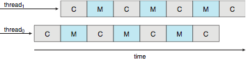
İki seviyeli zamanlama OSC ch5 sl. 42. (1) İşletim sistemi hangi yazılım thread'inin hangi mantıksal CPU'da çalışacağını seçer. (2) Çekirdek, o an hangi donanım thread'ini fiziksel çekirdekte çalıştıracağını seçer. Sayısal örnek: 4 çekirdek × 2 donanım thread'i = işletim sistemi 8 mantıksal işlemci görür OSC ch5 sl. 41.
Neden 2× hız garanti değil? İki thread aynı yürütme birimleri, önbellekler ve bellek bant genişliği için yarışır; kazanç hangi kaynak için yarıştıklarına bağlıdır Okuma §10. İkisi de hesap ağırlıklıysa kazanç küçük, biri sık stall yaşıyorsa büyüktür. Hoca: "Two logical CPUs on one core do not guarantee the throughput of two independent physical cores" sl. 45.
8.4 Affinity, NUMA, göç ve scheduling domains sl. 46; OSC ch5 sl. 44–45, 64; Okuma §10#
Sezgi. Thread'i taşımak kuyrukları dengeler, ama thread'in "eşyası" (önbellekteki verisi, NUMA'da yerel belleği) eski yerde kalır.
Tanımlar.
- Processor affinity: bir thread bir işlemcide çalıştıkça o işlemcinin önbelleği thread'in erişimlerini tutar; thread'in o işlemciye "yakınlığı" olur OSC ch5 sl. 44.
- Soft affinity: işletim sistemi thread'i aynı işlemcide tutmaya çalışır, garanti vermez. Hard affinity: process üzerinde çalışabileceği işlemci kümesini belirtir OSC ch5 sl. 44. Linux'ta
taskset/sched_setaffinityile kurulan maske budur ek bilgi; komut hocada sl. 62. - NUMA (non-uniform memory access): belleğin bir kısmı bir işlemci grubuna daha yakındır, uzak belleğe erişim daha yavaştır ek bilgi: tanımın kendisi. NUMA-aware işletim sistemi belleği thread'in çalıştığı CPU'ya en yakın yerden ayırır OSC ch5 sl. 45. NUMA makinesinde bellek yerleşimi göçün maliyetine eklenir sl. 46.
- Scheduling domain: birbirine karşı dengelenebilen CPU kümesi. Domain'ler CPU'ları paylaşılan donanıma ve yerelliğe göre gruplar; hocanın şekli kavramsal bir örnektir sl. 46; OSC ch5 sl. 64.
Göç maliyeti hiyerarşiye bağlıdır ek bilgi. Göç yerelliği kaybettirebilir sl. 46, ama ne kadar kaybettireceği hiyerarşideki konuma bağlıdır:
SMT kardeşleri (aynı çekirdek) → L1/L2 ortak, göç ucuz
Aynı soketi / LLC'yi paylaşan çekirdekler → L3 ortak, orta maliyet
Farklı NUMA düğümü → önbellek + yerel bellek kaybı, pahalı
Linux'un domain düzeyleri (SMT → MC → NUMA) bu katmanlara göre kurulur ve dengeleme önce içteki katmanda denenir.
Örnek. 2 NUMA düğümü, her birinde 4 çekirdek. X düğüm 0'da çalışıyor, belleği de düğüm 0'da; düğüm 1 boş.
- Dengeleyici X'i düğüm 1'e taşırsa kuyruklar dengelenir.
- Ama X'in bellek erişimleri artık uzak düğüme gider ve önbelleği soğuktur.
- Kuyruk dengesi düzelir, X'in kendi hızı düşebilir. Kararın iyi olup olmadığı X'in ne kadar daha çalışacağına ve ne kadar bellek yoğun olduğuna bağlıdır.
Hocanın vurgusu. "Affinity constrains eligible CPUs. It does not reserve a CPU or remove interference from other work" sl. 46. Affinity maskesi bir yerleşim kısıtıdır; o CPU'yu başka işlere ya da kesmelere kapatmaz. Okumadaki deney de bunu kullanır: iki işçi aynı CPU'ya sabitlenir ki orada yarışsınlar; bu, CPU'yu dış işlere kapatmaz, eşzamanlı başlamayı da garanti etmez Okuma §15 S-7.
Linux'ta nasıl görünür (Ubuntu'da beklenen, burada doğrulanmadı).
lscpu # CPU(s), Thread(s) per core, Core(s) per socket, Socket(s), NUMA node(s)
cat /sys/devices/system/cpu/cpu0/topology/thread_siblings_list # cpu0 ile aynı çekirdeği paylaşanlar (ek bilgi)
taskset -pc "$$" # izin verilen CPU listesi (affinity maskesi)
ps -o pid,tid,psr,comm -L -p <pid> # her thread ayrı satır; PSR = son örneklenen CPU (ek bilgi)
lscpu'daki CPU(s) mantıksal CPU sayısıdır. PSR örneklenmiş bir değerdir; sürekli orada çalışıldığının ya da ayrılmış bir CPU'nun kanıtı değildir sl. 62. Gerçek yalıtım için isolcpus, cpuset cgroup'ları ve IRQ affinity gerekir ek bilgi.
Tuzaklar.
- "Process zamanlanır": thread destekli sistemde birim thread'dir sl. 43.
- "Runtime'daki 1000 görev çekirdeğin 1000 thread'idir": user-level runtime'da değildir sl. 43; Okuma §10.
- "Ek çekirdek tek thread'li programı hızlandırır": tek thread'li program ek çekirdeklerden paralel hızlanma alamaz; yalnız aynı CPU için rekabet azalırsa dolaylı kazanç olabilir sl. 43.
- "Per-CPU kuyruk her zaman daha iyidir": dengesizlik riski var, balancing şart sl. 44.
- "Load balancing bedavadır": göç yerelliği kaybettirebilir; maliyet hiyerarşiye bağlıdır (SMT kardeşi ucuz, NUMA düğümü pahalı) sl. 46.
- "8 mantıksal CPU = 8 çekirdek": 4 × 2 olabilir; ikinci donanım thread'i 2× verim garanti etmez sl. 45.
- "Pinning bir CPU'yu ayırır": yerleşimi kısıtlar, aynı CPU'da başka işe izin verir sl. 46; sl. 66.
- Soft affinity ≠ hard affinity: birincisi çekirdeğin tercihi, ikincisi kullanıcının kısıtı OSC ch5 sl. 44.
Kontrol soruları
- 4 çekirdekli, SMT'li (çekirdek başına 2) bir makinede tek kernel thread'i üzerinde 50 coroutine çalıştıran bir program kaç mantıksal CPU'yu aynı anda kullanabilir? Neden?
taskset -c 2ile iki işçiyi CPU 2'ye sabitledin. CPU 2 artık bu iki işçiye mi ayrıldı? Deneyde bu kısıt hangi amaca hizmet ediyor?
9. Real-time temelleri: hard ve soft, r/C/D/T, latency, RM/EDF modeli sl. 47–50#
9.1 Hard ve soft real time sl. 47; OSC ch5 sl. 46, 50; Okuma §11#
Sezgi. Real-time sistemde sonuç doğru değer + doğru zamandır. Geç gelen doğru cevap bazı sistemlerde yanlış cevaptır.
Tanım.
- Hard real time: deadline'ı karşılamak, belirtilen çalışma varsayımları altında doğruluğun (correctness) parçasıdır sl. 47. OSC: görev deadline'ına kadar hizmet görmelidir OSC ch5 sl. 46.
- Soft real time: bir miktar gecikmeye düşen kaliteyle katlanılabilir; örnek: düşürülen bir medya karesi sl. 47. OSC: kritik real-time görevler en yüksek önceliği alır ama ne zaman zamanlanacakları garanti edilmez OSC ch5 sl. 46.
- Ayrım sonuçlar ve gereksinimlerle ilgilidir; işlemcinin hızlı olmasıyla ya da ortalama tepkinin küçük görünmesiyle ilgili değildir Okuma §11.
Mekanizma: garanti neye dayanır?
- Her iş için en kötü durum yürütme süresi sınırı (WCET). Hızlı bir ortalama yürütme süresi en kötü durum garantisi kurmaz sl. 47.
- Gecikme kaynaklarının sınırları: blocking, kesme gecikmeleri, yürütme süresi değişkenliği. Öncelik tek başına bunların hepsini hesaba katamaz sl. 47.
- Bir zamanlanabilirlik (schedulability) analizi: RM sınırı, RTA ya da EDF koşulu (10. ve 11. bölümler).
OSC'nin notu: preemptive, öncelik tabanlı zamanlama yalnız soft real time garanti eder; hard real time için deadline'ları karşılama yeteneği de gerekir OSC ch5 sl. 50.
Örnek ek bilgi. Fren kontrol döngüsü 10 ms'de bir çalışır; 10 ms içinde bitmezse o çevrimin çıktısı geçersizdir → hard. Video oynatıcı 33 ms'lik kareyi 40 ms'de çizerse bir kare takılır → soft.
9.2 Görev ve iş modeli: r, C, D, d, T sl. 48; OSC ch5 sl. 50; Okuma §11#
Sezgi. Görev (task) bir tariftir, iş (job) o tarifin bir pişirilişidir. Periyodik görev her T'de bir yeni iş doğurur.
Tanım sl. 48:
- Her işin salınma (release) anı r, yürütme talebi C ve mutlak deadline'ı d = r + D vardır. D göreli deadline'dır (relative deadline).
- Periyodik görev her T zaman biriminde bir iş salar.
- Görev tekrarlayan bir iş kaynağıdır; iş salınmış tek bir örnektir.
- Kullanım oranı (utilization) U = Σ Ci / Ti sl. 50; tekrarlayan iş yükünün ortalama talep oranıdır Okuma §11.

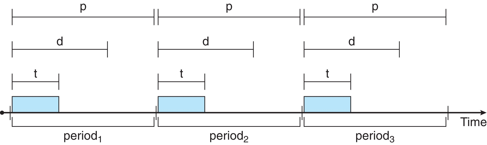
Notasyon (sınavda en çok karışan yer).
| Kavram | Hocanın notasyonu sl. 48 | OSC'nin notasyonu OSC ch5 sl. 50 |
|---|---|---|
| Salınma anı | r | (yok) |
| Yürütme talebi | C | t |
| Göreli deadline | D | d |
| Mutlak deadline | d = r + D | (yok) |
| Periyot | T | p |
| Kısıt | bu derste D = T sl. 50 | 0 ≤ t ≤ d ≤ p |
Hoca bu belirsizliği gidermek için C, D, T kullandığını açıkça söyler sl. 48. OSC'de d göreli, hocada d mutlak deadline'dır. OSC şekli üzerinden soru gelirse önce harfleri çevir.
Mekanizma. Eşzamanlı başlangıçta k'ıncı iş (1'den sayarak): r_k = (k − 1)·T, d_k = r_k + D. D = T ise d_k = k·T, yani bir sonraki salınma anı. Example B'de P2 = (C = 35, T = 80): P2#1 (r = 0, d = 80), P2#2 (80, 160), P2#3 (160, 240), P2#4 (240, 320), P2#5 (320, 400).
ek bilgi Hiperperiyot (hyperperiod). H = LCM(T1, …, Tn). Eşzamanlı başlayan periyodik sistemde H anında kuyruk boşsa çizelge H'den sonra kendini tekrar eder. H içindeki toplam talep H·U'dur. Example B: LCM(50, 80) = 400; talep 8·25 + 5·35 = 375 = 400·0,9375, yani H boyunca 25 ms boşta.
9.3 Yararlı yürütmeden önceki gecikmeler sl. 49; OSC ch5 sl. 47–49; Okuma §11#
Sezgi. "Olay oldu → görev çalıştı" arasında boş bir an yok sanılır. Gerçekte birkaç aşama vardır ve her biri sınırlandırılmalıdır.
Tanımlar OSC ch5 sl. 47–49:
- Event latency: olayın oluşmasından hizmet görmesine kadar geçen süre.
- Interrupt latency: kesmenin gelişinden onu işleyen rutinin (ISR) başlamasına kadar geçen süre.
- Dispatch latency: çalışan süreci CPU'dan alıp başkasına geçmenin süresi (1.3).
- Dispatch latency'nin conflict (çatışma) aşaması OSC ch5 sl. 49: (1) kernel mode'da çalışan herhangi bir sürecin preempt edilmesi, (2) düşük öncelikli sürecin, yüksek öncelikli sürecin ihtiyaç duyduğu kaynakları bırakması.
Mekanizma: zincir sl. 49:
olay ─► [interrupt latency] ─► handler işi ─► [dispatch gecikmesi: conflict + dispatch] ─► görev yararlı işe başlar
▲
nonpreemptible bölüm ya da başka yerde tutulan kaynak burada bekletir
- Donanım kesmeyi yükseltir; CPU o an kesmeleri kapatmış bir bölümdeyse bekler ek bilgi.
- Handler çalışır, görevi ready yapar.
- Scheduler en yüksek öncelikli görevi seçer. Ama çalışan kod nonpreemptible bir bölümdeyse ya da görevin istediği kaynak başka yerde tutuluyorsa, en yüksek öncelikli ready görev yine bekler sl. 49.
- Context switch yapılır, görev başlar.
Sonuç. Deadline akıl yürütmesi yalnız scheduler'ın seçim kuralını değil, sınırlı (bounded) yürütme ve girişimi (interference) ister sl. 49. Sıfır maliyetli modelimiz gerçek bir makinenin en kötü durum zamanlamasının kanıtı değil, bir akıl yürütme başlangıcıdır Okuma §11.
Linux'ta ek bilgi. PREEMPT_RT yapılandırması çekirdeğin nonpreemptible bölümlerini küçültür; cyclictest gecikme dağılımını ölçer. İkisi de kaynakta yok.
9.4 RM ve EDF örneklerinin modeli sl. 50; Okuma §11#
Hocanın varsayımları (özet) sl. 50:
- Tek işlemci.
- Bağımsız periyodik görevler, hepsi ilk kez t = 0'da salınır.
- D = T.
- C'ler bilinen en kötü durum sınırlarıdır (örnek ortalaması değil).
- İşler tam preemptible; sıfır blocking, sıfır zamanlama maliyeti.
- U = Σ(Ci / Ti); bütün örneklerde birim milisaniye.
Okuma bir varsayım daha ekler: release jitter yok Okuma §11. Hocanın kaydı: "These assumptions support the mathematical results. They are not a description of every deployed real-time system" sl. 50.
Bu dosyada sabitlenen iz kuralları (kaynakta açıkça yok; okumanın "consistent tie rules" uyarısı gereği yazılıyor Okuma §15 S-9):
- Bir işin bitişi d anında ya da öncesindeyse deadline karşılanmıştır (bitiş ≤ d).
- Aynı anda olan olaylarda: önce biten iş çıkar, sonra yeni salınan iş eklenir, sonra seçim yapılır.
- Deadline'ını kaçıran iş iptal edilmez, geç de olsa bitirilir. Slayt 53'teki "85'te biter, 5 geç kalır" ifadesi bu modeli ima eder.
- Salınmalar izlenen aralığın sonunda kesilmez; periyodik görev her T'de salmaya devam eder.
- RM'de eşit periyotta küçük indeks kazanır ek bilgi; hocanın örneklerinde eşit periyot yok.
- EDF'de eşit mutlak deadline: çalışan iş kalır; eşitlerden hiçbiri çalışmıyorsa önce salınan, o da eşitse küçük indeks (11.3).
Tuzaklar.
- "Hızlı işlemci = hard real time": ayrım gereksinimle ilgili Okuma §11.
- "En yüksek önceliği verdim, deadline garanti": öncelik blocking'i, kesme gecikmesini ve süre değişkenliğini hesaba katmaz sl. 47.
- "Ölçtüğüm en büyük süre WCET'tir": gözlenen maksimum yalnız yapılan koşular hakkında kanıttır; garanti edilmiş bir sınır bütün ilgili girdileri ve çalışma koşullarını kapsayan bir gerekçe ister Okuma §15 S-8.
- "En yüksek öncelikli ready görev hemen çalışır": nonpreemptible bölüm ya da tutulan kaynak bekletir sl. 49.
- Görev ile işi karıştırmak: RM'de t = 80'de P2#1 (d = 80) ile P2#2 (d = 160) ikisi birden kuyruktadır.
- OSC'nin
d'sini hocanınd'si sanmak sl. 48.
Kontrol soruları
- P = (C = 10, T = 40), D = T. Üçüncü işin r ve d değerleri nedir? OSC'nin şeklinde aynı görev hangi harflerle yazılır?
- En yüksek öncelikli görev ready oldu ama hemen çalışmadı. Slayt 49'a göre iki neden say.
10. Rate-monotonic, Liu–Layland, response-time analysis sl. 51–54#
10.1 Rate-monotonic öncelikler, Example A sl. 51; OSC ch5 sl. 51; Okuma §12#
Sezgi. Daha sık gelen iş daha sabırsızdır; kısa periyotlu göreve öncelik ver.
Tanım. RM (rate-monotonic) periyoda göre sabit öncelik atar: kısa periyot → yüksek öncelik. Öncelik bir görevin ardışık işleri boyunca sabit kalır sl. 51. OSC: öncelik periyodun tersine göre atanır OSC ch5 sl. 51. Yeni salınan yüksek öncelikli iş düşük öncelikli işi preempt eder Okuma §12.
Mekanizma. Her olayda (salınma, bitiş) kuyruktaki en kısa T'li görevin en eski bitmemiş işi seçilir. Deadline'a bakılmaz.
Example A sl. 51: P1 = (C = 20, T = 50), P2 = (C = 35, T = 100). U = 20/50 + 35/100 = 0,40 + 0,35 = 0,75. H = 100.
| t | Olay | Hazır (öncelik sırasıyla; kalan, d) | Çalışan |
|---|---|---|---|
| 0 | P1#1 (d = 50), P2#1 (d = 100) salındı | P1#1 (20, 50) › P2#1 (35, 100) | P1 |
| 20 | P1#1 bitti (≤ 50 ✔) | P2#1 (35, 100) | P2 |
| 50 | P1#2 (d = 100) salındı → P2 preempt (kalan 5) | P1#2 (20, 100) › P2#1 (5, 100) | P1 |
| 70 | P1#2 bitti ✔ | P2#1 (5, 100) | P2 |
| 75 | P2#1 bitti (≤ 100 ✔) | boş | boş 75–100 |
| P1 0–20 | P2 20–50 | P1 50–70 | P2 70–75 | boş 75–100 |
Slayt: "P1 runs 0–20, P2 20–50, P1 50–70, P2 70–75. Both first jobs meet their deadlines" sl. 51. Boşta süre 25 = 100·(1 − 0,75).

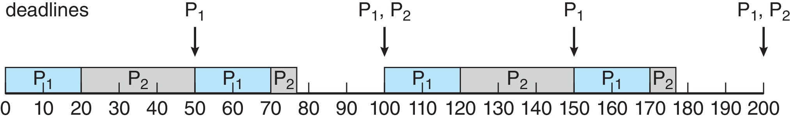
Tuzak. t = 50'de P1#2'nin deadline'ı (100) P2#1'inkiyle (100) aynıdır. RM yine de P1'i seçer, çünkü deadline'a değil periyoda bakar.
10.2 Yeterli kullanım sınırı (Liu–Layland) sl. 52; Okuma §12#
Sezgi. "Toplam yük şu eşiğin altındaysa RM ne olursa olsun yetişir" diyen hızlı bir test. Eşiğin üstü "bilmiyorum" demektir, "batar" değil.
Tanım sl. 52: modelimizde n bağımsız periyodik görev için (D = T)
U ≤ n · (2^(1/n) − 1) ⇒ RM ile zamanlanabilir
Sınırın adı ve kaynağı ek bilgi: C. L. Liu ve J. W. Layland, "Scheduling Algorithms for Multiprogramming in a Hard-Real-Time Environment", JACM, 1973. Hocanın slaytı isim vermez.
| n | n(2^(1/n) − 1) | Değer |
|---|---|---|
| 1 | 1·(2 − 1) | 1,0000 |
| 2 | 2·(√2 − 1) | 0,8284 ("about 0.8284" sl. 52) |
| 3 | 3·(2^(1/3) − 1) | 0,7798 |
| 4 | 4·(2^(1/4) − 1) | 0,7568 |
| 5 | 5·(2^(1/5) − 1) | 0,7435 |
| n → ∞ | ln 2 ≈ 0,6931 ek bilgi |
ek bilgi Limit: x = 1/n alınırsa n(2^(1/n) − 1) = (2^x − 1)/x; x → 0'da bu, 2^x'in 0'daki türevi, yani ln 2'dir. Sınır n arttıkça azalır: U ≤ %69 ise görev sayısı ne olursa olsun RM yetişir.
Mekanizma: testi uygulama.
- U'yu hesapla.
- U ≤ sınır(n) ise zamanlanabilir; analiz biter.
- U > 1 ise hiçbir tek işlemci algoritması yetişemez (11.4).
- sınır(n) < U ≤ 1 ise test sonuç vermez; RTA (10.4) ya da hiperperiyot boyunca iz gerekir.
- Example A: U = 0,75 ≤ 0,8284 → geçer sl. 52.
- Example B: U = 0,9375 > 0,8284 → test sonuç vermez; RTA kaçırmayı gösterir (10.4).
Sufficient (yeterli) ve necessary (gerekli).
- Yeterli koşul sağlanırsa sonuç kesin olarak doğrudur; sağlanmazsa bir şey söylemez.
- Gerekli koşul sağlanmazsa sonuç kesin olarak yanlıştır.
- Liu–Layland sınırı RM için yeterli, gerekli değil: "Above the bound does not mean failure. The test is sufficient, not necessary" sl. 52. Sınırı geçememek testin zamanlanabilirliği gösteremediği anlamına gelir; kaçırma olduğunu göstermez Okuma §12.
- U ≤ 1 her algoritma için gereklidir (U > 1 ise talep kapasiteyi aşar). Modelimizde EDF için aynı zamanda yeterlidir, yani tam (exact) koşuldur sl. 56.
Harmonik periyotlar sl. 52; Okuma §12. (C, T) = (1, 2), (2, 4), D = T. U = 1/2 + 2/4 = 1,0 > 0,8284; yine de bütün RM deadline'ları karşılanır sl. 52.
| t | Olay | Hazır (kalan, d) | Çalışan |
|---|---|---|---|
| 0 | P1#1 (d = 2), P2#1 (d = 4) | P1#1 (1, 2) › P2#1 (2, 4) | P1 |
| 1 | P1#1 bitti | P2#1 (2, 4) | P2 |
| 2 | P1#2 (d = 4) salındı → P2 preempt (kalan 1) | P1#2 (1, 4) › P2#1 (1, 4) | P1 |
| 3 | P1#2 bitti | P2#1 (1, 4) | P2 |
| 4 | P2#1 bitti (= d ✔), desen tekrarlar |
| P1 0–1 | P2 1–2 | P1 2–3 | P2 3–4 |. Hiç boş zaman yok (U = 1), hiç kaçırma yok. RTA: R2 = 2 → 3 → 4 → 4 ≤ 4 ✔. ek bilgi Harmonik küme: her periyot kendisinden büyük her periyodu tam böler (2, 4, 8, …); böyle kümelerde RM, U ≤ 1 olduğu sürece yetişir.
10.3 U < 1 iken bile kaçırma: Example B sl. 53; OSC ch5 sl. 52; Okuma §12#
P1 = (C = 25, T = 50), P2 = (C = 35, T = 80), D = T. U = 25/50 + 35/80 = 0,5 + 0,4375 = 0,9375 sl. 53. RM'de P1 yüksek öncelikli (50 < 80).
Slayt sl. 53: RM P1'i 0–25, P2'yi 25–50 çalıştırır. Sonraki P1 işi P2'yi preempt eder ve 50–75 çalışır. P2'nin 75'te hâlâ 10 birimi kalmıştır ama deadline'ı 80'dir. 85'te biter ve 5 birim kaçırır.

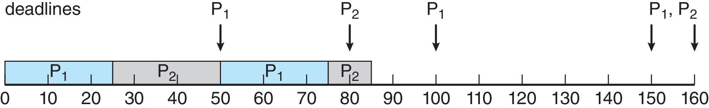
ek bilgi Bütün hiperperiyot, 0–400. Slayt 85'te durur; iz aynı kurallarla 400'e kadar sürer:
| t | Olay | Hazır (RM sırası; kalan, d) | Çalışan |
|---|---|---|---|
| 0 | P1#1 (d = 50), P2#1 (d = 80) salındı | P1#1 (25, 50) › P2#1 (35, 80) | P1 |
| 25 | P1#1 bitti ✔ | P2#1 (35, 80) | P2 |
| 50 | P1#2 (d = 100) salındı → P2#1 preempt | P1#2 (25, 100) › P2#1 (10, 80) | P1 |
| 75 | P1#2 bitti ✔ | P2#1 (10, 80) | P2 |
| 80 | P2#2 (d = 160) salındı; P2#1 kaçırdı (kalan 5) | P2#1 (5, 80) › P2#2 (35, 160) | P2#1 (geç) |
| 85 | P2#1 bitti (5 geç) | P2#2 (35, 160) | P2#2 |
| 100 | P1#3 (d = 150) → P2#2 preempt | P1#3 (25, 150) › P2#2 (20, 160) | P1 |
| 125 | P1#3 bitti ✔ | P2#2 (20, 160) | P2 |
| 145 | P2#2 bitti ✔ | boş | boş |
| 150 | P1#4 (d = 200) | P1#4 (25, 200) | P1 |
| 160 | P2#3 (d = 240) | P1#4 (15, 200) › P2#3 (35, 240) | P1 |
| 175 | P1#4 bitti ✔ | P2#3 (35, 240) | P2 |
| 200 | P1#5 (d = 250) → P2#3 preempt | P1#5 (25, 250) › P2#3 (10, 240) | P1 |
| 225 | P1#5 bitti ✔ | P2#3 (10, 240) | P2 |
| 235 | P2#3 bitti ✔ | boş | boş |
| 240 | P2#4 (d = 320) | P2#4 (35, 320) | P2 |
| 250 | P1#6 (d = 300) → P2#4 preempt | P1#6 (25, 300) › P2#4 (25, 320) | P1 |
| 275 | P1#6 bitti ✔ | P2#4 (25, 320) | P2 |
| 300 | P2#4 bitti ✔; P1#7 (d = 350) | P1#7 (25, 350) | P1 |
| 320 | P2#5 (d = 400) | P1#7 (5, 350) › P2#5 (35, 400) | P1 |
| 325 | P1#7 bitti ✔ | P2#5 (35, 400) | P2 |
| 350 | P1#8 (d = 400) → P2#5 preempt | P1#8 (25, 400) › P2#5 (10, 400) | P1 |
| 375 | P1#8 bitti ✔ | P2#5 (10, 400) | P2 |
| 385 | P2#5 bitti ✔ | boş | boş 385–400 |
| 400 | kuyruk boş, t = 0 ile aynı durum |
Gantt (her karakter 5 ms, # çalışıyor):
P1 #####.....#####.....#####.....#####.....#####.....#####.....#####.....#####.....
P2 .....#####.....#####.....####......#####.....##.##.....#####.....#####.....##...
0 50 100 150 200 250 300 350 400
▲ 80: P2#1 kaçırır (85'te biter)
Gözlemler.
- Tek kaçırma: P2#1 (deadline 80, bitiş 85, 5 geç) sl. 53.
- Kaçırmanın kökü: t = 50'de RM, deadline'ı 80 olan P2#1'i deadline'ı 100 olan P1#2 için durdurur.
- 80–85 arasında aynı görevin iki işi (P2#1 ve P2#2) aynı anda kuyruktadır.
- Boşta süre 145–150, 235–240, 385–400 → 5 + 5 + 15 = 25 = 400·(1 − 0,9375). Talep korunumu tutar.
- 400'de kuyruk boş olduğu için çizelge her hiperperiyotta tekrar eder; P2 her 400 ms'de bir (80, 480, 880, …) deadline kaçırır.
- Preemption'lar (0–400): t = 50, 100, 200, 250, 350 → 5.
10.4 Response-time analysis (RTA) sl. 54; Okuma §12#
Sezgi. Düşük öncelikli bir işin bitiş süresi = kendi işi + bu süre içinde araya giren bütün yüksek öncelikli işler. Ama araya girenlerin sayısı bitiş süresine bağlıdır; bu yüzden sabit noktaya kadar yinelenir.
Tanım. Burada R salınmadan bitişe kadar geçen süredir (release-to-completion); 2. bölümdeki "ilk hizmete kadar" response time değildir sl. 54. İki görev için hocanın formülü sl. 54:
R(next) = C2 + ⌈R / T1⌉ · C1, R0 = C2
Neden tavan (ceiling)? Uzunluğu R olan [0, R) penceresinde, t = 0'da birlikte salınmış P1'den en fazla ⌈R/T1⌉ iş salınır, her biri C1 kadar girişim yapar. Okuma: "Each ceiling counts higher-priority jobs that can interfere during the response interval" Okuma §12.
Example B, P2 için sl. 54:
| k | R^(k) | ⌈R/50⌉ | R^(k+1) = 35 + ⌈R/50⌉·25 |
|---|---|---|---|
| 0 | 35 | 1 | 60 |
| 1 | 60 | 2 | 85 |
| 2 | 85 | 2 | 85 (sabit nokta) |
R = 85 > D2 = 80 → zamanlanamaz. Bu, zaman çizelgesinde görülen girişimi doğrular; bitiş de 85'tir sl. 54.
ek bilgi Example A, P2 için. 35 → 35 + ⌈35/50⌉·20 = 55 → 35 + ⌈55/50⌉·20 = 75 → 75. R = 75 ≤ 100 ✔; çizelgedeki bitişle aynı.
Kaynağın kaydı. "This simple recurrence assumes our independent, preemptible task model and excludes blocking and overhead" sl. 54.
ek bilgi Genel biçim. n görevde, hp(i) = i'den yüksek öncelikli görevler:
R_i^(k+1) = C_i + Σ_{j ∈ hp(i)} ⌈R_i^(k) / T_j⌉ · C_j , R_i^(0) = C_i
Durma: R^(k+1) = R^(k) ise sabit nokta; R ≤ D_i ise görev zamanlanabilir. R bir adımda D_i'yi aşarsa da başarısızlık kesinleşir (R monoton artar). İlk işin yeterli olmasının nedeni critical instant sonucudur: modelimizde en kötü tepki, bütün yüksek öncelikli görevlerle aynı anda salınan işte olur. Bu basit yineleme R ≤ T varsayar; blocking varsa bir B_i terimi eklenir.
Tuzaklar.
- "U < 1, RM deadline'larını kanıtlar": Example B, U = 0,9375 ve 80'de kaçırma sl. 66; Okuma §15 S-4.
- "U, Liu–Layland sınırını aşıyor; RM kesin kaçırır": harmonik (1, 2), (2, 4) U = 1 ile geçer sl. 52; Okuma §15 S-5.
- 3 görevli kümeye n = 2 sınırını uygulamak: n'yi doğru say.
- RTA'daki R'yi ilk hizmet anı sanmak sl. 54.
- ⌈ ⌉ yerine ⌊ ⌋ ya da R/T kullanmak: ⌈60/50⌉ = 2, çünkü 50'de salınan ikinci P1 işi de girişim yapar.
- RTA'yı blocking ya da switch maliyeti varken aynen kullanmak: kaynak bunları dışarıda bırakır sl. 54.
- Yinelemeyi R > D olduğu anda kesmek doğru bir karardır, ama hoca slaytta sabit noktaya kadar gider (85 → 85). Sınavda ikisini de yazmak güvenli.
Kontrol soruları
- P1 = (C = 15, T = 40), P2 = (C = 42, T = 70), D = T. Liu–Layland testi ne der? P2 için RTA'yı yinele; RM yetişir mi?
- Liu–Layland sınırı için "sufficient, not necessary" ne demek? Her iki yönü de bu derste geçen bir örnekle göster.
11. EDF ve priority inversion sl. 55–58#
11.1 Earliest deadline first sl. 55; OSC ch5 sl. 53; Okuma §13#
Sezgi. Kim daha önce teslim edecekse o çalışsın. Öncelik göreve değil, işe ve zamana bağlıdır.
Tanım. EDF, hazır işler arasından mutlak deadline'ı en erken olanı seçer. Yeni işler geldikçe ve deadline'lar yaklaştıkça öncelikler değişebilir sl. 55. OSC: deadline erkense öncelik yüksek, geçse düşük OSC ch5 sl. 53. RM'den farkı, sıralamanın aynı iki görevin işleri arasında bile değişebilmesidir Okuma §13.
Mekanizma. Her olayda (salınma, bitiş) hazır işlerin mutlak deadline'larını karşılaştır; görev periyotlarını değil Okuma §13; sl. 57.
Example B'de 50 anı sl. 55: bitmemiş P2#1'in deadline'ı 80, yeni P1#2'nin deadline'ı 100. EDF P2'yi 60'a kadar çalıştırır, sonra P1'i 60–85 arasında çalıştırır. P2 deadline'ını karşılar. Okumanın 6. sorusu tam bu farkı sorar: RM periyodu kısa olduğu için P1'i, EDF deadline'ı erken olduğu için P2'yi seçer Okuma §15 S-6.
11.2 Example B, EDF ile, 0–400 sl. 55, 57; OSC ch5 sl. 53; Okuma §13#
Slayt sl. 57: P2 85–100 çalışır, P1 için 100–125 durur, ikinci işini 145'te bitirir. P1 sonra 150–175, P2 175–200 çalışır. 200'de P2'nin deadline'ı 240, P1'inki 250'den önce gelir. P2 210'da biter, P1 235'te tamamlanır. "Continue by comparing absolute deadlines at every event."

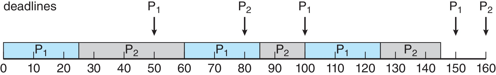
Eşitlik kuralı: çalışan kalır (11.3).
| t | Olay | Hazır (EDF sırası; kalan, d) | Çalışan | Gerekçe |
|---|---|---|---|---|
| 0 | P1#1 (d = 50), P2#1 (d = 80) | P1#1 (25, 50) › P2#1 (35, 80) | P1 | 50 < 80 |
| 25 | P1#1 bitti ✔ | P2#1 (35, 80) | P2 | |
| 50 | P1#2 (d = 100) salındı | P2#1 (10, 80) › P1#2 (25, 100) | P2 | 80 < 100, preempt yok sl. 55 |
| 60 | P2#1 bitti ✔ (60 ≤ 80) | P1#2 (25, 100) | P1 | |
| 80 | P2#2 (d = 160) | P1#2 (5, 100) › P2#2 (35, 160) | P1 | 100 < 160 |
| 85 | P1#2 bitti ✔ | P2#2 (35, 160) | P2 | |
| 100 | P1#3 (d = 150) → P2#2 preempt | P1#3 (25, 150) › P2#2 (20, 160) | P1 | 150 < 160 |
| 125 | P1#3 bitti ✔ | P2#2 (20, 160) | P2 | |
| 145 | P2#2 bitti ✔ | boş | boş | |
| 150 | P1#4 (d = 200) | P1#4 (25, 200) | P1 | |
| 160 | P2#3 (d = 240) | P1#4 (15, 200) › P2#3 (35, 240) | P1 | 200 < 240 |
| 175 | P1#4 bitti ✔ | P2#3 (35, 240) | P2 | |
| 200 | P1#5 (d = 250) salındı | P2#3 (10, 240) › P1#5 (25, 250) | P2 | 240 < 250 sl. 57 |
| 210 | P2#3 bitti ✔ | P1#5 (25, 250) | P1 | |
| 235 | P1#5 bitti ✔ | boş | boş | |
| 240 | P2#4 (d = 320) | P2#4 (35, 320) | P2 | |
| 250 | P1#6 (d = 300) → P2#4 preempt | P1#6 (25, 300) › P2#4 (25, 320) | P1 | 300 < 320 |
| 275 | P1#6 bitti ✔ | P2#4 (25, 320) | P2 | |
| 300 | P2#4 bitti ✔; P1#7 (d = 350) | P1#7 (25, 350) | P1 | |
| 320 | P2#5 (d = 400) | P1#7 (5, 350) › P2#5 (35, 400) | P1 | 350 < 400 |
| 325 | P1#7 bitti ✔ | P2#5 (35, 400) | P2 | |
| 350 | P1#8 (d = 400) salındı | P2#5 (10, 400) = P1#8 (25, 400) | P2 | eşitlik, çalışan kalır |
| 360 | P2#5 bitti ✔ | P1#8 (25, 400) | P1 | |
| 385 | P1#8 bitti ✔ | boş | boş 385–400 |
Gantt (5 ms/karakter, eşitlikte çalışan kalır):
P1 #####.......#####...#####.....#####.......#####...#####.....#####.......#####...
P2 .....#######.....###.....####......#######......##.....#####.....#######........
0 50 100 150 200 250 300 350 400
Kaçırma yok. Boşta süre 5 + 5 + 15 = 25 ✔. Preemption: t = 100 ve 250 → 2 (RM'de 5). Okumanın 0–235 tablosu bununla birebir aynıdır Okuma §13. RM ile EDF'nin ayrıldığı anlar t = 50 (RM: P1#2, EDF: P2#1) ve t = 200 (RM: P1#5, EDF: P2#3). 200'deki ayrılık RM'de kaçırmaya yol açmaz (P2#3 RM'de 235'te biter, 235 ≤ 240).
11.3 EDF eşitlik kuralı (tie-break) Okuma §15 S-9#
Hocanın slaytı EDF eşitliği için kural vermez; okuma yalnız "consistent tie rules" ister Okuma §15 S-9. Example B'de eşitlik ilk kez t = 350'de çıkar (P2#5 ve P1#8'in deadline'ı 400). Slaytın izi 235'te bittiği için bu durum slaytta görünmez.
| Kural | 350–400 | Sonuç |
|---|---|---|
| (a) Çalışan kalır; eşitlerden hiçbiri çalışmıyorsa önce salınan, o da eşitse küçük indeks (bu notların varsayılanı) | P2 350–360, P1 360–385, boş | ikisi de ✔ |
| (b) Küçük görev indeksi (P1 önce) | P1 350–375, P2 375–385, boş | ikisi de ✔ |
"Çalışan kalır" kuralı tek başına yetmez: eşit deadline'lı işlerin hiçbiri çalışmıyorsa bir yedek kural gerekir, yoksa çizelge tek değildir. ek bilgi Eşit deadline'lı iki iş arasındaki sıra, ikisinden sonra bitenin bitiş anını değiştirmez (burada ikisi de en geç 385'te biter). Bu yüzden U ≤ 1 olduğu sürece EDF'nin fizibilite sonucu eşitlik kuralından bağımsızdır; değişen, hangi işin önce bittiği ve preemption sayısıdır. Switch maliyeti sıfır değilse (a) daha ucuzdur.
ek bilgi Example A'da da eşitlik var: t = 50'de P1#2 ile P2#1'in deadline'ı da 100. (a) ile | P1 0–20 | P2 20–55 | P1 55–75 |; (b) ile slayttaki RM çizelgesiyle aynı sıra çıkar. İkisinde de kaçırma yok.
11.4 EDF: kullanım koşulu ve sınırları sl. 56; Okuma §13#
Tanım. Tek işlemci, bağımsız, tam preemptible, D = T modelinde U ≤ 1, EDF fizibilitesi için tam (exact) kullanım koşuludur sl. 56. Example B'de U = 0,9375 ≤ 1: RM bir deadline kaçırsa da EDF zamanlar sl. 56. ek bilgi EDF tek işlemcide optimaldir: herhangi bir algoritma bir kümeyi zamanlayabiliyorsa EDF de zamanlayabilir (Dertouzos 1974).
Hoca bir sonlu izin ne olduğunu da söyler: "A finite trace illustrates decisions. The feasibility theorem provides the guarantee under the stated model" sl. 57.
D < T olunca kullanım oranı tek başına yetmez; iş daha kısa deadline pencerelerine yoğunlaşabilir sl. 56; Okuma §13.
ek bilgi Karşı örnek. P1 = (C = 2, D = 2, T = 5), P2 = (C = 2, D = 3, T = 5). U = 2/5 + 2/5 = 0,8 ≤ 1, ama:
| t | Olay | Hazır (kalan, d) | Çalışan |
|---|---|---|---|
| 0 | P1#1 (d = 2), P2#1 (d = 3) | P1#1 (2, 2) › P2#1 (2, 3) | P1 |
| 2 | P1#1 bitti ✔ | P2#1 (2, 3) | P2 |
| 3 | P2#1 kaçırdı (kalan 1) | P2#1 (1, 3) | P2 (geç) |
| 4 | P2#1 bitti (1 geç) | boş | boş |
| P1 0–2 | P2 2–4 | boş 4–5 |. [0, 3] penceresinde 4 birim talep var, kapasite 3: hiçbir algoritma kurtaramaz. U = 0,8 bunu göremez. Doğru araç talep-sınır analizidir: her pencere uzunluğu L için "deadline'ı L içinde kalan işlerin toplam C'si ≤ L" (processor demand). Yoğunluk (density) testi Σ Ci / min(Di, Ti) ≤ 1, D < T için yeterli bir testtir; burada 2/2 + 2/3 ≈ 1,67 > 1, yani test zaten uyarır.
Zenginleştirilmiş analiz gerektirenler: blocking, overhead, release jitter, birden çok işlemci sl. 56. Sınıf içi bir fizibilite sonucunu her varsayımı kontrol etmeden konuşlandırılmış bir sisteme uygulama Okuma §13. ek bilgi Çok işlemcide "U ≤ m ise global EDF yetişir" doğru değildir (Dhall etkisi).
ek bilgi Aşırı yük: U > 1. P1 = (C = 3, T = 5), P2 = (C = 4, T = 8). U = 0,6 + 0,5 = 1,1. H = 40'ta talep 8·3 + 5·4 = 44 > 40; tek işlemcide hiçbir algoritma 40 birimlik zamana 44 birim iş sığdıramaz. Bu, gerekli koşulun (U ≤ 1) ihlalidir. İki algoritma kaçırmaları farklı dağıtır (salınmalar 40'tan sonra da sürer):
- RM:
| P1 0–3 | P2 3–5 | P1 5–8 | P2 8–10 | … | P1 35–38 | P2 38–40 | P1 40–43 | P2 43–45 |. P2'nin bütün işleri kaçırır: P2#1 (d = 8, bitiş 10), P2#2 (16 → 20), P2#3 (24 → 30), P2#4 (32 → 40), P2#5 (d = 40, bitiş 45; 40'ta salınan P1#9, 40–43'te P2#5'i keser). P1 hiç kaçırmaz. U > 1 olduğu için birikim her hiperperiyotta büyür; çizelge 40'ta kendini tekrar etmez. - EDF: kaçırmalar iki göreve yayılır. 37'ye kadar: P2#2 (d = 16, bitiş 17), P1#5 (25 → 27), P2#4 (32 → 34), P1#7 (35 → 37). 37'de P1#8 (r = 35) ile P2#5 (r = 32) aynı deadline'la (40) bekler ve hiçbiri çalışmıyor; "çalışan kalır" karar vermez, yedek kural belirler:
- (a) önce salınan:
| P2 37–41 | P1 41–44 |→ P2#5 (41) ve P1#8 (44) de kaçırır; 40'a kadar salınan işlerde altı kaçırma. - (b) küçük indeks:
| P1 37–40 | P2 40–44 |→ P1#8 40'ta yetişir, P2#5 44'te biter; beş kaçırma.
- (a) önce salınan:
- Ders: aşırı yükte RM kaçırmaları en düşük öncelikli göreve hapseder; EDF ise kaçırmayı yüksek frekanslı göreve de yayar ("domino etkisi"). U > 1'de hangisinin "daha iyi" olduğu, hangi görevin kaçırmayı kaldırabileceğine bağlıdır.
Linux bağlantısı. Linux SCHED_DEADLINE, EDF ile bant genişliği rezervasyonu mekanizmasını birleştiren ayrı bir politikadır sl. 60. EEVDF'nin "virtual deadline"ı uygulamaya duvar saati deadline'ı sözü vermez sl. 60; sl. 66. Ayrıntı 12.2'de.
11.5 Blocking ve priority inversion sl. 58; OSC ch5 sl. 49; Okuma §13#
Sezgi. Yüksek öncelikli H, düşük öncelikli L'nin elindeki kilidi bekliyor. Kilitle hiç ilgisi olmayan orta öncelikli M araya girip L'yi durdurursa H dolaylı olarak M'yi de beklemiş olur. Öncelik sırası tersine döner.
Tanım sl. 58:
- Priority inversion: H, L'nin tuttuğu bir kilidi bekler. M, L'yi preempt edebilir ve H'nin beklemesini uzatır.
- H'nin önceliği tek başına kilidi serbest bırakamaz. Bağımlılık L'den geçer.
- Priority inheritance: kilit sahibinin (L) önceliği geçici olarak, kilidi bekleyen en yüksek öncelikli görevin önceliğine çıkarılır. Tam sınırlar yine de kilitleme kurallarına ve kritik bölüm uzunluklarına bağlıdır sl. 58.
- Senkronizasyon real-time akıl yürütmenin parçasıdır, ayrı bir doğruluk konusu değildir Okuma §13. Mekanizmalar 3. derste sl. 58.
- OSC'deki karşılığı: dispatch latency'nin conflict aşamasının ikinci maddesi, yani düşük öncelikli sürecin yüksek öncelikli sürecin ihtiyaç duyduğu kaynağı bırakması OSC ch5 sl. 49.
ek bilgi Adım adım iz. Tek CPU, öncelik H = 3 > M = 2 > L = 1; * kilit altında çalışma.
- L: varış 0; 1 birim CPU, sonra 3 birim kritik bölüm (CS), sonra 1 birim CPU.
- H: varış 2; 1 birim CPU, sonra aynı kilitle 2 birim CS, sonra 1 birim CPU.
- M: varış 3; 5 birim CPU, kilit kullanmaz.
Priority inheritance yok: | L 0–1 | L* 1–2 | H 2–3 | M 3–8 | L* 8–10 | H* 10–12 | H 12–13 | L 13–14 |
- t = 1: L kilidi alır.
- t = 2: H gelir, L'yi preempt eder.
- t = 3: H kilidi ister, bloklanır. Aynı anda M gelir; hazır olanlar M ve L → M çalışır (3–8).
- t = 8: L kritik bölümü bitirir (8–10), kilidi bırakır.
- H 10–13. H'nin bitişi 13. Kilit beklemesi 3 → 10 = 7 birim; bunun 5 birimi kilitle ilgisi olmayan M yüzünden.
Priority inheritance var: | L 0–1 | L* 1–2 | H 2–3 | L* 3–5 (öncelik 3) | H* 5–7 | H 7–8 | M 8–13 | L 13–14 |
- t = 3: H bloklanınca L, H'nin önceliğini (3) devralır. M (2) L'yi preempt edemez.
- L kritik bölümü 3–5'te bitirir, kilidi bırakır, önceliği 1'e döner.
- H 5–8 → H'nin bitişi 8. Bekleme 3 → 5 = 2 birim, yani yalnız L'nin kalan kritik bölümü kadar.
- Bedeli M öder (bitişi 8 → 13).
ek bilgi Mars Pathfinder (1997). İniş aracı VxWorks üzerinde tekrarlayan sistem sıfırlamaları yaşadı. Düşük öncelikli bir meteoroloji görevi paylaşılan "information bus"ın mutex'ini tutarken yüksek öncelikli bus yönetim görevi o mutex'i bekledi; orta öncelikli, uzun süren iletişim görevi düşük öncelikliyi preempt etti. Yüksek öncelikli görev zamanında bitemeyince watchdog sistemi sıfırladı. Çözüm, o mutex'te priority inheritance seçeneğini açmaktı. Sınav kaynağı değildir.
ek bilgi Priority ceiling protocol (PCP) kilide görebileceği en yüksek görev önceliği kadar bir "tavan" verir; zincirleme blocking'i ve inheritance'ın tek başına önleyemediği deadlock'u önler. POSIX'te PTHREAD_PRIO_INHERIT ve PTHREAD_PRIO_PROTECT mutex protokolleri vardır.
Tuzaklar.
- EDF'de "P1'in periyodu kısa, o kazanır" demek: EDF mutlak deadline'a bakar Okuma §13.
- Bitmemiş eski işin mutlak deadline'ını unutmak: 50'de P2#1'in d'si hâlâ 80'dir sl. 55.
- "Sonlu bir EDF izi fizibiliteyi kanıtlar": iz kararları gösterir, garantiyi teorem verir sl. 57.
- "U ≤ 1 her durumda EDF'yi kanıtlar": tek CPU, bağımsız, tam preemptible görevler ve D = T altında U ≤ 1 EDF için tam koşuldur; D < T'de kullanım oranı tek başına yetmez sl. 56.
- "EDF ile EEVDF aynı garantiyi verir": uygulama deadline'ı ile sanal hizmet deadline'ı farklı amaçlara hizmet eder sl. 66.
- "H en yüksek öncelikte, M onu geciktiremez": gecikme L üzerinden dolaylı gelir sl. 58.
- "Priority inheritance blocking'i yok eder": H yine L'nin kalan kritik bölümünü bekler; sınır kilit kurallarına ve CS uzunluklarına bağlıdır sl. 58.
- RTA ve Liu–Layland sonuçları sıfır blocking varsayar sl. 50; sl. 54; kilit varsa doğrudan geçerli değildir.
Kontrol soruları
- Example B'de 200 anında RM ve EDF neden farklı iş seçer? Bu farklılık RM'de bir kaçırmaya yol açar mı?
- D < T olan bir kümede U = 0,8 iken EDF neden deadline kaçırabilir? Kendi küçük örneğini kur.
12. Linux: CFS'ten EEVDF'e, sınıflar, nice, FIFO/RR/DEADLINE, Ubuntu gözlemi sl. 59–63#
Bu bölümün komutları ve beklenen çıktıları Ubuntu'da beklenen, burada doğrulanmadı; notlar macOS'ta hazırlandı ve macOS'ta chrt, taskset, /proc, CFS ve EEVDF yok. "macOS'ta ölçüldü" diye geçen sayılar gerçek ölçümdür ve 12.8'de ayrı durur. Okuma da aynı durumu söyler: program hazırlık makinesinde (macOS) derlenip çalıştırıldı, Ubuntu komutları ders ortamında henüz test edilmedi Okuma §14.
12.1 Tarihsel bağlam: CFS ve virtual runtime sl. 59; OSC ch5 sl. 59–63; Okuma §14#
Hocanın çerçevesi. Eski CFS çizimi işleri virtual runtime ile sıralayarak orantılı adaleti (proportional fairness) açıklar; bunu tarihsel arka plan say. Güncel çekirdek belgeleri, Linux 6.6 ile başlayan EEVDF geçişini anlatır. Gerçek bir Ubuntu gözlemini açıklarken kurulu çekirdek sürümü ve dağıtım yapılandırması önemlidir sl. 59; Okuma §14.
OSC'nin anlattığı tarih OSC ch5 sl. 59–62.
- 2.5 öncesi Linux klasik UNIX zamanlayıcısının bir türevini kullanıyordu. 2.5 ile O(1) zamanlayıcı geldi: öncelik tabanlı, preemptive, CPU başına çalıştırma kuyruğu. İyi çalıştı ama etkileşimli süreçlerin yanıtı kötüydü OSC ch5 sl. 59.
- CFS (Completely Fair Scheduler, 2.6.23+): zamanlama sınıfları (scheduling classes); scheduler en yüksek öncelikli sınıftaki en yüksek öncelikli işi seçer. Sabit zaman dilimi yerine CPU zamanının oranına dayanır OSC ch5 sl. 60.
- Kuantum nice değerinden (−20..+19) hesaplanır; küçük nice = yüksek öncelik. Target latency, her işin en az bir kez çalışması gereken aralıktır OSC ch5 sl. 61.
- Her iş için vruntime tutulur; düşük öncelikte vruntime daha hızlı artar, nice 0'da gerçek çalışma süresine eşittir. Sıradaki iş vruntime'ı en küçük olandır OSC ch5 sl. 61. Hazır işler vruntime anahtarıyla kırmızı-siyah ağaçta durur OSC ch5 sl. 62.
ek bilgi Mekanizma, çekirdek kaynağından. Her güncellemede:
delta_exec = şimdi − exec_start
vruntime += delta_exec × (NICE_0_LOAD / weight) // NICE_0_LOAD = 1024
Ağırlık sched_prio_to_weight[] tablosundan gelir; her nice adımı yaklaşık 1,25 kat ağırlık farkıdır:
| nice | weight | nice | weight | |
|---|---|---|---|---|
| −20 | 88761 | 5 | 335 | |
| −10 | 9548 | 10 | 110 | |
| −5 | 3121 | 15 | 36 | |
| 0 | 1024 | 19 | 15 |
Aynı CPU'da yarışan iki işin payı w / Σw'dir. nice 0 ile nice 10: 1024 / 1134 ≈ %90,3 ve 110 / 1134 ≈ %9,7 (oran ≈ 9,3 : 1). Oran yalnız nice farkına bağlıdır: nice 5 ile 15 (335 : 36) yine ≈ 9,3 : 1 verir.
Global öncelik eşlemesi OSC ch5 sl. 59, 63. Real-time 0–99, normal 100–139; sayısal olarak küçük değer yüksek önceliktir. nice −20 → 100, nice +19 → 139 OSC ch5 sl. 63. ek bilgi Formül prio = 120 + nice; OSC sl. 59'daki "100 to 140" bir yazım hatasıdır, sl. 63 ve çekirdek 139'da biter.
12.2 Sanal deadline ve gerçek deadline: EEVDF ve SCHED_DEADLINE sl. 60; Okuma §14#
Hocanın üç cümlesi sl. 60:
- EEVDF uygun (eligible) fair-class işleri sanal deadline'lar (virtual deadlines) ve hizmet muhasebesiyle seçer. Bunlar adalet ve gecikme (fairness/latency) mekanizmalarıdır.
- Linux
SCHED_DEADLINE, EDF'yi bant genişliği rezervasyonu mekanizmasıyla kullanan ayrı bir politikadır. - EEVDF'nin sanal deadline'ı, uygulamanın duvar saatine göre bitirme sözü değildir.
ek bilgi EEVDF'nin kavramları (çekirdeğin sched-eevdf belgesinden; sayısal ayrıntılar sürüme göre değişir). EEVDF (Earliest Eligible Virtual Deadline First) iki soruyu ayırır: kim hizmet almayı hak ediyor, hak edenler arasında kimin sanal deadline'ı en erken?
- Lag: işin ağırlığına göre hak ettiği hizmet ile aldığı hizmet arasındaki fark. Lag ≥ 0 olan iş uygundur (eligible); fazla hizmet almış iş beklemelidir.
- Sanal deadline:
vd = vruntime + slice / weight. Küçük slice daha erken sanal deadline verir: daha düşük gecikme, ama daha fazla toplam CPU değil. - Seçim: uygun işler arasında sanal deadline'ı en erken olan çalışır. Ağırlık tablosu CFS ile aynıdır; uzun vadede pay yine w / Σw.
| EEVDF | EDF (ders, 11. bölüm) | SCHED_DEADLINE | |
|---|---|---|---|
| Deadline neyi ölçer | sanal zaman; adil hizmet sırası | uygulamanın mutlak deadline'ı | uygulamanın verdiği runtime / deadline / period |
| Söz | uzun vadede orantılı pay, sınırlı lag | model varsayımlarıyla U ≤ 1 ise bütün deadline'lar tutulur sl. 56 | EDF + kabul denetimi + rezervasyon |
| Sınıf | fair | (teorik algoritma) | deadline |
12.3 Linux öncelikleri ve politikaları sl. 61; OSC ch5 sl. 55–57; Okuma §14#
Hocanın cümleleri sl. 61:
- Normal zamanlama için nice değerleri −20 ile +19 arasıdır. Göreli hizmeti etkiler, kesin bir bitirme deadline'ı vermez.
SCHED_FIFOveSCHED_RRstatik real-time öncelikleri kullanır. RR aynı öncelikteki akranlar arasında zaman dilimler.- Bu haftanın gözlem etkinliği politika ve affinity'yi okur; ayrıcalıklı real-time iş yükü açmayı gerektirmez.
ek bilgi Sınıflar, yüksekten düşüğe (OSC sl. 60 sınıf fikrini verir):
stop > deadline > rt > fair > idle
| Sınıf | Politikalar | Not |
|---|---|---|
| stop | (kullanıcı seçemez) | CPU başına migration/N; her şeyi keser ek bilgi |
| deadline | SCHED_DEADLINE |
runtime / deadline / period; EDF + rezervasyon sl. 60 |
| rt | SCHED_FIFO, SCHED_RR |
statik öncelik sl. 61; OSC ch5 sl. 55; API aralığı 1..99 (ek bilgi; chrt -m ile doğrula) |
| fair | SCHED_OTHER (= SCHED_NORMAL), SCHED_BATCH, SCHED_IDLE |
CFS, 6.6'dan sonra EEVDF |
| idle | (kullanıcı seçemez) | CPU başına idle görevi ek bilgi |
Politikalar.
- SCHED_OTHER / SCHED_NORMAL: varsayılan zaman paylaşımlı politika; nice ile ayarlanır.
chrtbunuSCHED_OTHERdiye yazar (ek bilgi: çekirdek içindeki adıSCHED_NORMAL). - SCHED_FIFO: FIFO kuyruğu; aynı öncelikte zaman dilimleme yoktur. İş bloklanana, kendisi bırakana ya da daha yüksek öncelikli bir RT iş gelene kadar çalışır OSC ch5 sl. 55.
- SCHED_RR: FIFO gibidir ama aynı öncelikteki akranlar arasında zaman dilimler OSC ch5 sl. 55; sl. 61. ek bilgi Varsayılan dilim 100 ms (
/proc/sys/kernel/sched_rr_timeslice_ms). - SCHED_DEADLINE: iş
(runtime, deadline, period)bildirir; çekirdek EDF ile seçer sl. 60. ek bilgi Kabul denetimi (admission control) yapar; bütçe aşılırsa iş bir sonraki periyoda kadar kısılır (CBS). - ek bilgi SCHED_BATCH etkileşimsiz CPU-yoğun iş içindir; SCHED_IDLE idle sınıfında değil, fair sınıfında çok küçük bir ağırlıkla çalışır.
POSIX API ve OSC'nin kodu OSC ch5 sl. 55–57. Politika pthread_attr_getschedpolicy / pthread_attr_setschedpolicy ile okunur ve yazılır. OSC sl. 56–57'deki kod SCHED_FIFO istiyor ama pthread_attr_setinheritsched(&attr, PTHREAD_EXPLICIT_SCHED) çağırmıyor. Linux'ta varsayılan PTHREAD_INHERIT_SCHED olduğu için bu istek yok sayılır: pthread_create başarılı olur, thread'ler oluşturan thread'in politikasıyla (SCHED_OTHER) çalışır. PTHREAD_EXPLICIT_SCHED eklenirse yetkisiz kullanıcıda pthread_create EPERM döner ek bilgi; doğrulanmadı.
ek bilgi RT throttling. Sonsuz döngüye giren bir SCHED_FIFO işi aynı CPU'daki her normal işi aç bırakabilir (7.3'teki starvation, 7.4'teki kuyruklar arası katı öncelik). Linux bunu bir emniyet supabıyla sınırlar (Ubuntu'da beklenen, burada doğrulanmadı):
cat /proc/sys/kernel/sched_rt_period_us # 1000000 (1 s)
cat /proc/sys/kernel/sched_rt_runtime_us # 950000 (0,95 s)
Her 1 s'de RT sınıfı en çok 0,95 s CPU alır, %5 normal işlere kalır. Bu bir emniyet mekanizmasıdır, real-time garanti değil. Yeni çekirdeklerde bu işi kısmen "fair server" adlı bir deadline sunucusu üstleniyor; ayrıntı sürüme göre değişir.
12.4 Öncelik sayılarının yönü sl. 37; sl. 61; OSC ch5 sl. 59, 63#
Aynı "öncelik" kelimesi en az dört ölçekte geçer:
| Ölçek | Aralık | Yön | Kaynak |
|---|---|---|---|
| Ders örneği (öncelik zamanlaması) | 1..5 vb. | küçük = yüksek | sl. 37 |
| nice | −20..+19 | küçük = daha çok CPU | sl. 61; OSC ch5 sl. 61 |
RT API önceliği (sched_priority, chrt, ps rtprio) |
1..99 (aralık ek bilgi) | büyük = yüksek | sl. 37 ("opposite numerical direction") |
Çekirdek iç prio |
0..139 | küçük = yüksek | OSC ch5 sl. 59, 63 |
ek bilgi Eşleme: RT için prio = 99 − rt_priority (RT 99 → prio 0, RT 1 → prio 98), normal için prio = 120 + nice. Böylece her RT iş her normal işten önce gelir: RT öncelik 1 (prio 98) bile nice −20'lik işin (prio 100) önündedir.
ek bilgi ps ve top sütunları (procps-ng sürümüne bağlı; Ubuntu'da beklenen, burada doğrulanmadı):
| Sütun | nice 0 | nice 19 | RT 50 | Yön |
|---|---|---|---|---|
ps -o pri |
19 | 0 | 90 | büyük = yüksek |
ps -l PRI |
80 | 99 | 9 | küçük = yüksek |
top PR |
20 | 39 | −51 | küçük = yüksek |
ps -o rtprio |
- |
- |
50 | büyük = yüksek |
ps -o ni |
0 | 19 | - |
küçük = daha çok CPU |
"PRI sütununda büyük sayı yüksek öncelik mi?" sorusunun cevabı "hangi araç, hangi sütun?" olmalı. Sınavda RT önceliği sorulursa API yönünü (büyük = yüksek) kullan ve bunu açıkça yaz sl. 37. CLS sütunu ek bilgi: TS = SCHED_OTHER, B = BATCH, IDL = IDLE, FF = FIFO, RR = RR, DLN = DEADLINE.
12.5 Ubuntu gözlemi: ortamı kaydet sl. 62; Okuma §14#
Hoca sl. 62: uname -r, lscpu ve araçların kurulu sürümlerini kaydet. VM'de sanal CPU sayısını da kaydet. Kabuk için:
uname -r # çekirdek sürümü: 6.6 ve üstünde fair sınıfı EEVDF'ye geçmeye başladı
lscpu # CPU(s) mantıksal CPU sayısıdır; Thread(s) per core, NUMA node(s)
ps -o pid,cls,ni,psr,comm -p "$$"
# PID CLS NI PSR COMMAND (Ubuntu'da beklenen, burada doğrulanmadı; temsili)
# 4321 TS 0 3 bash
chrt -p "$$"
# pid 4321's current scheduling policy: SCHED_OTHER
# pid 4321's current scheduling priority: 0
taskset -pc "$$"
# pid 4321's current affinity list: 0-3
uname -r: 6.6 ve üstünde fair sınıfı EEVDF'ye geçmeye başladı; ayrıntı sürüme ve dağıtıma bağlıdır, sürümü kaydet sl. 59. ek bilgi Ubuntu 24.04 LTS'nin çekirdeği 6.8 serisidir; 22.04'ün ilk çekirdeği 5.15'tir.CLS TS+NI 0: fair sınıfı, varsayılan ağırlık.- PSR,
ps'in örnek aldığı anda işin en son hangi mantıksal CPU'da olduğunu söyler. "PSR is a sampled CPU identifier, not proof of continuous execution or an exclusive reservation" sl. 62. taskset -pc: izin verilen CPU kümesi. Rezervasyon değildir: başka işler ve kesmeler aynı CPU'yu kullanabilir sl. 46; sl. 66. Konteyner ya da VM'de CPU 0 izinli olmayabilir; listeden seç Okuma §14.
nice bir artımdır (macOS'ta gözlendi, 2026-11-03). Notları hazırlayan kabuk zaten NI = 5 ile çalışıyordu: ./cpu-work → NI 5, nice -n 10 ./cpu-work → NI 15 (ps ile okundu). nice -n değeri ekler. Deneyde "nice 0" dediğin iş gerçekten nice 0 mı, ps -o ni ile oku ve kaydet. Kendi önceliğini düşürmek (nice'ı artırmak) yetki gerektirmez Okuma §14; nice'ı düşürmek CAP_SYS_NICE ister ek bilgi.
12.6 cpu-work.c satır satır sl. 63; Okuma §14#
Okumanın programı yaklaşık 0,75 saniyelik süreç CPU zamanı tükettikten sonra durur, aynı zamanda geçen süreyi (elapsed) ölçer Okuma §14.
#define _POSIX_C_SOURCE 200809L
-std=c11 katı ISO C kipidir; clock_gettime ve CLOCK_* sabitleri bu makro olmadan başlıklardan görünmeyebilir ek bilgi.
const double demand = 0.75; /* CPU seconds, not elapsed seconds. */
const double wall0 = seconds(CLOCK_MONOTONIC);
const double cpu0 = seconds(CLOCK_PROCESS_CPUTIME_ID);
İki farklı saat; deneyin bütün fikri bu.
CLOCK_MONOTONIC: geriye gitmeyen duvar saati, "geçen süre".CLOCK_PROCESS_CPUTIME_ID: bu sürecin gerçekten tükettiği CPU süresi. Hazır kuyrukta beklerken artmaz.- Hedef CPU cinsinden olduğu için her koşuda iş miktarı sabittir; çekişme yalnız geçen süreyi uzatır Okuma §14; sl. 63. Duvar saatine göre dursaydı çekişmede daha az iş yapıp aynı sürede biterdi ve karşılaştırma anlamsızlaşırdı.
volatile uint64_t state = 1;
unsigned long batches = 0;
do {
for (int i = 0; i < 100000; ++i)
state = state * UINT64_C(6364136223846793005) + 1;
++batches;
} while (seconds(CLOCK_PROCESS_CPUTIME_ID) - cpu0 < demand);
- İş: 64 bitlik doğrusal eşlik üreteci (LCG) adımı. Saf CPU işi: I/O yok, sistem çağrısı yok ek bilgi.
- İşaretsiz (unsigned) taşma C'de tanımlıdır, mod 2⁶⁴ sarar ("defined wraparound") Okuma §14. İşaretli olsaydı taşma tanımsız davranış olurdu ek bilgi.
volatileher iterasyondastate'in bellekten okunup yazılmasını zorlar; derleyici döngüyü silemez ya da kapalı formüle indiremez ("keeps the work observable to the compiler") Okuma §14. macOS'tacc -O2çıktısının disassembly'sinde iç döngüldr → madd → str → subs → b.neolarak duruyor.- Neden 100 000'lik paketler (batch): saati her çarpmadan sonra okumak işin çoğunu saat okumaya harcatırdı. Saat paket sonunda okunur; bedeli, CPU toplamının hedefi biraz aşabilmesidir Okuma §14. macOS'ta ölçüldü:
cpu_s0,750004 ile 0,750286 arasında; aşım 0,29 ms'ye kadar. Ortalama paket ≈ 0,22 ms (≈ 0,75 s / ~3400 paket); E (verimlilik) çekirdeğinde bir paket daha uzun sürebilir, bu yüzden aşım ortalama paketten biraz büyük çıkabilir. - Sınırlı (bounded): CPU talebine ulaşınca durur. Yarışan iki kopyanın biri bitince öbürü yalnız kalır; bu da ölçümü etkiler Okuma §14.
printf("cpu_s=%.6f elapsed_s=%.6f batches=%lu checksum=%llu\n", ...);
elapsed − cpu≈ hazır kuyrukta bekleme (+ çok az başka gecikme). Tek başına çalışıncaelapsed ≈ cpu.batchesyapılan iş miktarıdır; CPU-saniye başına batch çekirdeğin hızının vekilidir (frekans, P/E çekirdek, SMT kardeşinin meşgul olması).checksumsonucun kullanıldığını derleyiciye gösterir; sayının kendisi anlamsızdır.
12.7 Okumadaki deney: aynı CPU, nice 0 ve nice 10 sl. 63; Okuma §14#
Hoca: okuma sınırlı bir CPU-iş programı ve sıradan nice değerleri 0 ve 10 ile aynı-CPU karşılaştırması verir. Çekişmenin, CPU talebi benzer kalırken geçen süreyi nasıl değiştireceğini tahmin et. Gerçek CPU süresini, geçen süreyi ve tekrarlanan koşuları kaydet. "A single result cannot identify the scheduling algorithm. VM load, affinity and other runnable work affect the observation" sl. 63. Bu, yapay zekâ yardımına izin verilen isteğe bağlı bir çalışmadır; ödev kuralları ayrıdır sl. 63.
cc -O2 -std=c11 -Wall -Wextra cpu-work.c -o cpu-work
./cpu-work # önce bir kez tek başına
cpu_id=2 # taskset -pc "$$" çıktısından izinli bir CPU seç
taskset -c "$cpu_id" ./cpu-work > normal.txt &
worker_normal=$!
taskset -c "$cpu_id" nice -n 10 ./cpu-work > nice10.txt &
worker_nice=$!
wait "$worker_normal"; wait "$worker_nice"
cat normal.txt nice10.txt
Okumanın istediği: hangi işçinin CPU talebini önce tamamlayacağını tahmin et, deneyi tekrarla, başlatma sırasını ters çevir, iki eşit nice işçiyle karşılaştır Okuma §14.
İdeal hesap ek bilgi; Ubuntu'da beklenen, burada doğrulanmadı. Kabukta NI = 0, ağırlıklar 1024 ve 110, paylar ≈ %90,3 / %9,7:
- nice 0 işçi 0,75 CPU-s'ye ulaşana kadar
0,75 / 0,903 ≈ 0,83 sgeçer. Bu sürede nice 10 işçi ≈ 0,08 CPU-s alır. - Sonra nice 10 işçi yalnız kalır, kalan ≈ 0,67 s'yi tamamlar → ≈ 1,50 s.
- Eşit nice kontrolü: ikisi de ≈ %50 alır, ikisi de ≈ 1,50 s civarında biter. Toplam 1,5 CPU-s tek CPU'da en az 1,5 s sürer.
- İki durumda da her işin
cpu_s'i ≈ 0,75'tir; değişen yalnızelapsed_ssl. 63.
Varsayımlar: eşzamanlı başlangıç, o CPU'da başka iş yok, 1024 : 110 ağırlık, sıfır ek yük. Gerçek koşu bunları bozar: arka plan işleri tam aynı anda başlamaz ve önce biten iş kalanın rekabetini değiştirir Okuma §14; yeni başlayan işin yerleştirilme kuralları başlangıçta küçük sapma yaratır ek bilgi; seçilen CPU'daki kesmeler ve başka işler (affinity rezervasyon değil); VM'de vCPU'nun host'ta beklemesi; güç yönetimi Okuma §14.
ek bilgi Autogroup ve cgroup tuzağı. Ubuntu masaüstünde CONFIG_SCHED_AUTOGROUP açık olabilir (cat /proc/sys/kernel/sched_autogroup_enabled); systemd de işleri cgroup'lara koyar. nice yalnız aynı grup içinde ağırlık belirler. İki işçiyi iki ayrı terminalden başlatırsan gruplar önce kendi aralarında eşit paylaşabilir ve nice etkisi kaybolabilir. Okumadaki tarif zaten iki işi aynı kabuktan başlatıyor; bu, autogroup etkisini de önler (bu bir ek bilgi yorumudur, okuma bu gerekçeyi vermez).
Okumanın sınırları. Bu deney çekişmeyi ve göreli hizmeti gösterebilir. Kesin bir CPU payı oranını kanıtlayamaz, zamanlayıcıyı yalnız zamanlamadan teşhis edemez, hard real-time bir sınır kuramaz Okuma §14. Gözlemi ideal sınıf çizelgesine uydurmaya zorlama; farkları kanıtla açıkla Okuma §14.
12.8 macOS'ta ölçüldü (2026-11-03)#
Ortam: macOS 26.6.2, Darwin 25.6.0, Apple M4, 10 mantıksal CPU (4 performans + 6 verimlilik çekirdeği), Apple clang 21, cc -O2 -std=c11 -Wall -Wextra (uyarısız derlendi). Makine boşta değildi: ölçüm başında load average ≈ 15,6 (Spotlight indeksleme), ölçüm sırasında 52'ye çıktı.
Neyin yapılamadığı. macOS'ta taskset yok ve bir thread'i belirli bir çekirdeğe sabitleme arayüzü yok ek bilgi. XNU zamanlayıcısı CFS ya da EEVDF değildir ve nice'ı farklı yorumlar. Aşağıdaki sayılar Linux'un ağırlık tablosunu test etmez.
A: tek başına (5 tekrar, /usr/bin/time -p):
| koşu | cpu_s | elapsed_s | real | user | sys | batches |
|---|---|---|---|---|---|---|
| 1 | 0,750 | 0,865 | 1,17 | 0,73 | 0,01 | 3382 |
| 2 | 0,750 | 0,988 | 0,99 | 0,73 | 0,01 | 3355 |
| 3 | 0,750 | 0,797 | 0,81 | 0,74 | 0,01 | 3505 |
| 4 | 0,750 | 0,784 | 0,78 | 0,74 | 0,01 | 3644 |
| 5 | 0,750 | 0,782 | 0,78 | 0,73 | 0,01 | 3664 |
Tek başına bile elapsed > cpu (0,78–0,99 s): "tek başına" iş aslında arka plan yüküyle yarışıyordu. İlk koşuda real 1,17 ile elapsed_s 0,865 arasındaki fark soğuk başlangıçtır: real süreç oluşturma, exec ve dinamik bağlamayı da içerir, program kendi saatini main içinde başlatır. /usr/bin/time -l ile: gönüllü 0, gönülsüz 3965 context switch (0,79 s'de). CPU-yoğun iş hiç bloklanmıyor ama yüklü makinede sürekli kesiliyor.
B: iki kopya eşzamanlı, "nice 0" ve "nice 10", sabitleme yok (5 tekrar × 2 başlatma sırası; kabuk NI = 5 olduğu için gerçek değerler 5 ve 15):
| n | ort. elapsed_s | aralık | |
|---|---|---|---|
| NI 5 | 10 | 0,834 | 0,785–0,917 |
| NI 15 | 10 | 0,834 | 0,787–0,917 |
Her çiftte iki kopya neredeyse aynı anda bitti; nice farkı görünmedi. Muhtemel açıklama: iki iş büyük olasılıkla farklı çekirdeklerde koştu ve aynı kuyrukta yarışmadı (hangi çekirdekte koştukları ölçülmedi). nice, aynı CPU için yarışanlar arasında göreli pay belirler.
C: kontrol, iki eşit nice kopya. 5 tekrarda iki işçinin elapsed değerleri birbirinin 5 ms içinde: 0,78–0,99 s. B ile aynı dağılım; yani B'deki değişkenlik nice'tan değil, arka plan yükünden geliyor olabilir.
D/E: çekirdek sayısını aşan kopya. K adet NI 5 ve K adet NI 15 (E'de NI 5 ile nice -n 19), bash döngüsüyle sırayla başlatıldı. Kopya başına ortalama elapsed_s, üç koşu:
| K (toplam 2K, 10 çekirdek) | düşük nice grubu | yüksek nice grubu |
|---|---|---|
| 10 (20 kopya) | 1,98 / 1,93 / 2,03 | 1,96 / 1,92 / 2,00 |
| 20 (40 kopya) | 3,41 / 2,74 / 2,72 | 3,25 / 2,81 / 2,04 |
20, nice -n 19 (E) |
1,18 / 1,25 / 3,41 | 1,10 / 1,36 / 3,22 |
Tutarlı bir nice etkisi yok; yüksek nice grubu bazen daha erken bitiyor. 40 kopya × 0,75 = 30 CPU-s; tam örtüşmede 10 çekirdekte en az 3 s sürmeli. Kopya başına ortalama koşudan koşuya 1,1 ile 3,4 s arasında değişti (40 kopyalık D'de 2,0–3,4 s; E'de iki koşu ≈ 1,2 s, bir koşu ≈ 3,3 s). 3 s'nin altındaki değerler kopyaların zamanda tam örtüşmediğini düşündürür: süreçler sırayla başlatıldı, erken başlayan erken bitti. Bu bir yorumdur, ölçümle kanıtlanmadı. Okuma da aynı şeyi uyarır: arka plan işleri tam aynı anda başlamaz Okuma §14.
F: sabit pencere testi. Başlatma sorununu azaltmak için sonsuz LCG döngüsü (spin) yazıldı. N tane NI 5 ve N tane NI 15 spinner başlatıldı, 8 saniye sonra ps'in TIME sütunundan biriken CPU süresi okundu:
| N + N (10 çekirdek) | NI 5 ort. CPU-s | NI 15 ort. CPU-s | NI 5 payı |
|---|---|---|---|
| 10 + 10 | 2,54 | 2,53 | %50 |
| 20 + 20 | 1,61 | 1,31 | %55 |
| 20 + 20 (NI 15 önce) | 1,54 | 1,40 | %52 |
| 20 + 20 (NI 15 önce) | 1,36 | 1,16 | %54 |
Yorum. Çekirdek başına 4 iş varken NI 15 grubu tutarlı biçimde biraz daha az CPU aldı (≈ %45–48 pay). 10 + 10 satırında, yüklü makinede çekişme olmasına rağmen etki görünmedi. Linux CFS/EEVDF'nin aynı nice farkı için ideal modeli (aynı kuyrukta) ≈ %90 / %10 der; macOS'taki etki çok daha zayıf. Bu fark macOS'un "zayıf" olduğunu kanıtlamaz: işler birçok çekirdeğe yayılmış, P ve E çekirdek hızları farklı, arka plan yükü değişken, XNU'nun öncelik modeli farklı. Bu deney şununla tutarlıdır: nice etkisi çekişme varken ve başlatma sırasının etkisi kaldırılınca daha görünür. Tek ortamda yapılan bu ölçüm genel bir kural kanıtlamaz. Ubuntu'da taskset -c ile aynı CPU'ya sabitlemek tam bu yüzden gerekli.
Tuzaklar.
- "nice bir deadline verir": göreli hizmeti etkiler sl. 61.
- "nice 10, nice 0'ın yarısı kadar CPU alır": aynı CPU'da ideal modelde ≈ %9,7'ye %90,3 ek bilgi; farklı CPU'larda nice farkı hiçbir şeyi değiştirmeyebilir.
- "
nice -n 10 cmdişin nice'ını 10 yapar": 10 ekler;ps -o niile oku. - "PSR = 2, demek ki süreç CPU 2'de çalışıyor ve CPU 2 onundur": örneklenmiş son CPU sl. 62.
- "taskset bir CPU'yu ayırır": yerleşimi kısıtlar sl. 46; sl. 66.
- "SCHED_FIFO'da aynı öncelikteki işler dilimlenir": FIFO'da dilim yok, RR'de var OSC ch5 sl. 55; sl. 61.
- "EEVDF = EDF = SCHED_DEADLINE": üçü ayrı sl. 60; sl. 66.
- "Küçük öncelik sayısı her zaman yüksek önceliktir": ölçeğe bağlı; Linux RT API'sinde büyük = yüksek sl. 37.
- "Linux şu an CFS kullanır": sürüme bağlı; CFS anlatımı tarihsel arka plan sl. 59.
- "RT öncelik 1'lik iş nice −20'lik normal işin arkasındadır": RT sınıfı fair sınıfından önce gelir OSC ch5 sl. 63.
- "İki işçi aynı sürede bitti, o hâlde zamanlayıcı round robin": tek sonuç algoritmayı teşhis edemez sl. 63.
- "
real > user + sysise program verimsiz": fark beklemedir; çekişme deneyinin ölçtüğü şey tam da bu sl. 63. - "OSC'nin kodu SCHED_FIFO thread'leri yaratır":
PTHREAD_EXPLICIT_SCHEDolmadan istek sessizce yok sayılır ek bilgi.
Kontrol soruları
- Kabukta NI = 0. İki
cpu-workaynı CPU'da, nice 0 ve nice 10. İdeal modelde her birininelapsed_sdeğeri yaklaşık nedir ve bu hesap hangi varsayımları yapar? - Aynı deneyi
tasksetolmadan 8 vCPU'lu bir VM'de yaparsan sonuç nasıl değişir? EEVDF'de bir işinslicedeğerini küçültmek uzun vadeli CPU payını değiştirir mi?
13. Politika değerlendirme, Little's law, gizli varsayımlar sl. 64–67#
13.1 Bir politikayı değerlendirmenin yolları sl. 64; OSC ch5 sl. 73–79; Okuma §15#
| Yöntem | Ne yapar | Güçlü yanı | Sınırı |
|---|---|---|---|
| Deterministic modeling (belirlenimci modelleme) | belirtilen bir iş yükü için kesin bir soruyu cevaplar | varsayımlar açık, kontrolü kolay | kapsamı dar; yalnız o girdi sl. 64; OSC ch5 sl. 74 |
| Queueing models (kuyruk modelleri) | varışları ve burst'leri olasılık dağılımlarıyla tanımlar | utilization, kuyruk uzunluğu, bekleme için formüller | dağılım varsayımları OSC ch5 sl. 75 |
| Simulation (benzetim) | varışları ve burst dağılımlarını değiştirir; rastgele üreteç ya da gerçek sistemden iz (trace) kullanır | birçok senaryoyu tarar | sonuç modele ve girdi izlerine bağlı, yalnız modellenen mekanizmaları içerir sl. 64; Okuma §15 |
| Measurement / implementation (ölçüm, uygulama) | gerçek sistemde çalıştırır | gerçek ek maliyeti ve girişimi içerir | tekrarlanabilir koşul ister; maliyetli, ortam değişir sl. 64; OSC ch5 sl. 79 |
Hocanın uyarısı: ortalamadan fazlasını karşılaştır ("Compare more than the mean") sl. 64. Ortalama önemli bir varyasyonu gizliyorsa gecikmelerin dağılımını raporla; politikaları karşılaştırırken iş yükü ve metrik aynı kalmalı Okuma §15. Bu kanıt türleri farklı soruları cevaplar; biri öbürünün yerine geçmez.
OSC'nin deterministic örneği OSC ch5 sl. 74. Beş iş, hepsi 0'da. Burst'ler P1…P5 = 10, 29, 3, 7, 12 (sayılar slaytta tablo görseli olarak duruyor; kitaptaki değerler, sonuçlar OSC'nin yazdığı 28 / 13 / 23 ile birebir tutuyor).
| Politika | Gantt | Ort. W |
|---|---|---|
| FCFS | P1 0–10, P2 10–39, P3 39–42, P4 42–49, P5 49–61 |
140/5 = 28 |
| SJF | P3 0–3, P4 3–10, P1 10–20, P5 20–32, P2 32–61 |
65/5 = 13 |
| RR q = 10 | P1 0–10, P2 10–20, P3 20–23, P4 23–30, P5 30–40, P2 40–50, P5 50–52, P2 52–61 |
115/5 = 23 |
13.2 Little's law ve ölçüm sınırları sl. 65; OSC ch5 sl. 76; Okuma §15#
Tanım. Kararlı (stable) ve sınırları tutarlı bir kuyruk için ortalama bekleyen iş sayısı = varış hızı × ortalama kuyruk beklemesi sl. 65:
Lq = λ · Wq
Örnek sl. 65: λ = 7 iş/s, Lq = 14 iş → Wq = 14 / 7 = 2 s. Birimler sonucun anlamını gösterir: iş ÷ (iş/s) = s.
Sınırlar sl. 65:
- Sayım çalışan işi de içeriyorsa yalnız kuyruk beklemesi değil, sistemde geçen süre kullanılmalıdır (L = λ · W).
- Sınırsız büyüyen aşırı yüklü kuyruk, bu hesabın varsaydığı kararlı durum ortalamalarını sağlamaz.
- OSC aynı yasayı
n = λ × Wdiye yazar: kararlı durumda kuyruktan çıkan iş sayısı giren iş sayısına eşittir; bu yüzden her zamanlama algoritması ve her varış dağılımı için geçerlidir OSC ch5 sl. 76.
ek bilgi Sınır tutarlılığı örneği. Aynı sistemde ortalama servis süresi 0,1 s olsun. Tek sunucunun meşguliyeti ρ = λ·S = 0,7, yani ortalama 0,7 iş serviste. Sistemdeki ortalama iş L = Lq + ρ = 14,7. Sistemde ortalama süre W = Wq + S = 2,1 s. Kontrol: λ·W = 7 · 2,1 = 14,7 ✔. Kuyruk sayısını sistem süresiyle (ya da tersini) eşleştirmek yanlış sonuç verir.
13.3 Gizli varsayımı bul: "X, Y'yi kanıtlamaz" sl. 66#
Hocanın dört örneği sl. 66:
- "SJF is always best." Hangi ölçüte göre, hangi varış bilgisiyle ve hangi burst bilgisiyle?
- "U < 1 proves RM deadlines." Yanlış: Example B'de U = 0,9375 ve 80'de kaçırma.
- "Pinning reserves a CPU." Yanlış: affinity yerleşimi kısıtlar, aynı CPU'da başka işe izin verir.
- "EDF and EEVDF mean the same guarantee." Yanlış: uygulama deadline'ları ile sanal hizmet deadline'ları farklı amaçlara hizmet eder.
Dersin bütününden aynı kalıpta toplanan liste:
| # | Yanlış ya da eksik iddia | Neden | Kaynak |
|---|---|---|---|
| 1 | R = 0 ise W = 0 | iş hemen başlayıp sonra kesilebilir (SRTF'de P1: R = 0, W = 9) | sl. 29; sl. 35 |
| 2 | %100 utilization = iyi yanıt | FCFS 24/3/3'te U = 1, ortalama R = 17 | sl. 35 |
| 3 | Aynı throughput = aynı bekleme | FCFS'nin iki sırası: aynı throughput, W 17 ile 3 | sl. 19–20 |
| 4 | Bloklu süre waiting'dir | turnaround onu içerir, hazır bekleme içermez; cihaz kuyruğu da öyle | sl. 17; Okuma §4 |
| 5 | Kesme geldi = başka iş çalıştı | kesme karar fırsatıdır | sl. 14 |
| 6 | Quantum doldu = context switch | başka hazır iş yoksa aynı iş devam eder | sl. 32 |
| 7 | Düşük ortalama bekleme = adalet ya da deadline | ortalama, çok uzun bekleyen birkaç işi gizler | sl. 10; sl. 16 |
| 8 | SJF'nin optimalliği her iş yükünde geçerlidir | kanıt eşzamanlı varış, bilinen burst ve sıfır overhead varsayımlarına dayanır; bunlar bozulunca garanti yoktur | sl. 22; sl. 24 |
| 9 | Sabit kümede minimum ortalama = açlık yok | süregelen iş yükü başka bir sorudur | Okuma §6 |
| 10 | Burst tahmini = bilinen burst = WCET | üçü ayrı | sl. 26 |
| 11 | Önceliği yükseltmek bloklu işi hızlandırır | eksik parça gelmeden iş ilerleyemez | sl. 8 |
| 12 | Seviye içinde RR = açlıktan koruma | açlık üst seviyelerden gelebilir | sl. 39; sl. 40 |
| 13 | Aging = otomatik ilerleme garantisi | değişim hızına, eşitlik kuralına ve yüksek öncelikli yüke bağlı | sl. 39; Okuma §9 |
| 14 | (n − 1)q toplam bekleme sınırıdır | tur arası boşluk sınırıdır; ek maliyet, öncelik ya da yeni varışla bozulur | sl. 30 |
| 15 | Küçük quantum her zaman daha iyi | q/(q + s) düşer; turnaround q ile monoton değişmez | sl. 32–33 |
| 16 | %80 kuralı evrensel Linux ayarı | ders kitabı pratik kuralı | sl. 33 |
| 17 | MLFQ'da kuyruk değişikliği yararlı iş ekler | tek işin bitişi değişmez | sl. 42 |
| 18 | Ders kitabı histogramı = bizim ölçümümüz | tarihsel öğretim şekli | sl. 10 |
| 19 | İki mantıksal CPU = iki fiziksel çekirdek | donanım thread'leri yürütme kaynaklarını paylaşır | sl. 45 |
| 20 | En yüksek öncelik = deadline garantisi | blocking, kesme gecikmesi, süre değişkenliği | sl. 47; sl. 49 |
| 21 | Gözlenen en büyük süre = garanti edilmiş WCET | yalnız yapılan koşular hakkında kanıt | Okuma §15 S-8 |
| 22 | U Liu–Layland sınırını aşıyorsa RM kaçırır | sınır yeterli, gerekli değil; harmonik küme U = 1 ile geçer | sl. 52; Okuma §15 S-5 |
| 23 | U ≤ 1 ise D < T'de de EDF yetişir | talep kısa pencerelere yoğunlaşabilir | sl. 56 |
| 24 | Sonlu bir iz fizibiliteyi kanıtlar | iz kararları gösterir, garantiyi teorem verir | sl. 57 |
| 25 | Priority inheritance blocking'i yok eder | sınır kilit kurallarına ve CS uzunluklarına bağlı | sl. 58 |
| 26 | RTA'daki R ilk hizmete kadar geçen süredir | salınmadan bitişe | sl. 54 |
| 27 | nice bir tamamlanma deadline'ı verir | göreli hizmeti etkiler | sl. 61 |
| 28 | PSR sürekli yürütmeyi kanıtlar | örneklenmiş CPU kimliği | sl. 62 |
| 29 | Tek zamanlama ölçümü algoritmayı tanımlar | VM yükü, affinity ve başka işler gözlemi etkiler | sl. 63 |
| 30 | Deterministic iz genel garantidir | yalnız o iş yükünü cevaplar | sl. 64 |
| 31 | Little yasası her kuyrukta geçerlidir | kararlı kuyruk ve tutarlı sınırlar ister | sl. 65 |
13.4 Çalışma rotası sl. 67; Okuma §15#
Hoca sl. 67: her zaman çizelgesini cevabını kontrol etmeden yeniden kur. Varışları, kalan talebi, kuyruk sırasını ve deadline'ları görünür tut. OSC 10e Bölüm 5: §§5.1–5.3 politikalar, §5.5 çok çekirdek, §5.6 real time, §5.8 değerlendirme. Sonraki ders: paylaşılan durum ve synchronization.
Bir zamanlama simülatörü ne kontrol etmeli? Okuma §15 S-9
- Hiçbir iş salınmasından (varışından) önce çalışmaz.
- Kalan talep hiçbir zaman negatif olmaz.
- Modellenen tek CPU'da çalışmalar çakışmaz.
- Her işin talebi korunur (toplam çalışma = B ya da C).
- Eşitlik kuralları tutarlıdır.
- Deadline'lar doğrudur.
- Metrikler grafikteki konumdan değil olaylardan hesaplanır.
Yapay zekâ yardımı Okuma §15 S-10. Varsayımları ve olay sırasını iste, sonra varışları, kalan talepleri, ilk başlamaları ve bitişleri bağımsız olarak doğrula. Akıcı bir açıklama bile yasadışı bir preemption ya da aritmetik hata içerebilir. Bu dosyanın hazırlığında da durum buydu: uzmanların kendi kurduğu iki örnekte (U > 1 izi ve OSC'nin pthread kodu) denetçi kritik hata buldu ve düzeltildi.
Okumanın tam çalışma geçişi Okuma §15. FCFS, SRTF ve RR'yi cevaplara bakmadan yeniden üret. Example B'yi RM ve EDF ile 160'a kadar izle; çalışan işteki her değişikliği ve her boşta aralığı açıkla. Son olarak Ubuntu deneyinin hangi varsayımları sağladığını ve hangilerini sağlamadığını bir paragrafta yaz.
Kontrol soruları
- Bir sunucuda kuyrukta ortalama 30 iş bekliyor ve saniyede 12 iş geliyor. Ortalama kuyruk beklemesi nedir? Sayım çalışan işleri de içerseydi hangi büyüklüğü bulmuş olurdun?
- "Simülasyonumda SRTF her senaryoda RR'den iyi çıktı, o hâlde SRTF daha iyi bir politikadır." Bu cümledeki gizli varsayımları say.
Ek: Ubuntu'da denenecek küçük deneyler (önce tahmin et, sonra çalıştır)#
Her deneyde önce tahmini yaz, sonra çalıştır, ham çıktıyı sakla. Bütün "beklenen" satırları Ubuntu'da beklenen, burada doğrulanmadı. Kaynak: sl. 62–63; Okuma §14. spin için cpu-work.c'nin döngüsünü sonsuz yapan küçük bir program ya da while :; do :; done & yeter.
1. Çekirdeğin kimliği sl. 59; sl. 62.
uname -r; lscpu | grep -E '^CPU\(s\)|Thread|Core|Socket|NUMA|Hypervisor'
- Tahmin: bu çekirdek CFS mi, EEVDF mi? Kaç mantıksal CPU, kaçı SMT kardeşi?
- Beklenen: Ubuntu 24.04 → 6.8.x → EEVDF. VM'de
Hypervisor vendorsatırı. - Neyi kanıtlamaz: sürüm numarası dağıtımın yamalarını ya da hangi zamanlayıcı özelliklerinin açık olduğunu tek başına göstermez. "CPU(s): 4" fiziksel 4 çekirdek demek değildir sl. 45.
2. Kabuğun politikası sl. 62.
ps -o pid,cls,ni,pri,rtprio,psr,comm -p "$$"; chrt -p "$$"; taskset -pc "$$"; chrt -m
- Tahmin: CLS, NI, RTPRIO ve
prisütunlarında ne çıkar? - Beklenen:
TS,0,-,pri19;SCHED_OTHERöncelik 0; affinity listesi bütün vCPU'lar.chrt -m: FIFO/RR 1–99, öbürleri 0/0. - Neyi kanıtlamaz: kabuğun politikası başlattığı her işin politikası değildir (miras alınır ama değiştirilebilir). Affinity listesi CPU'ların boş olduğunu göstermez.
3. PSR bir örnektir sl. 62.
./spin & p=$!
for i in $(seq 20); do ps -o psr= -p $p; sleep 0.1; done | sort | uniq -c; kill $p
taskset -c 1 ./spin & p=$!
for i in $(seq 20); do ps -o psr= -p $p; sleep 0.1; done | sort | uniq -c; kill $p
- Tahmin: sabitlenmemiş spinner'ın PSR değeri 20 örnekte değişir mi? Sabitlenmişinki?
- Beklenen: boş makinede iş büyük olasılıkla tek CPU'da kalır, yük altında değişebilir. Sabitlenmişte 20/20 →
1. - Neyi kanıtlamaz: 20/20 aynı PSR, işin örnekler arasında da orada kaldığını ya da o CPU'yu yalnız kullandığını kanıtlamaz. Örnekleme aralığından kısa göçleri göremezsin.
4. Tek başına taban çizgisi sl. 63.
/usr/bin/time -v ./cpu-work 2>&1 | grep -E 'cpu_s|Elapsed|User|System|context'
- Tahmin:
elapsed_s / cpu_soranı? Gönüllü ve gönülsüz context switch'ten hangisi büyük? - Beklenen: oran ≈ 1,0–1,1; gönüllü çok küçük, gönülsüz küçük-orta.
/usr/bin/timeyoksasudo apt install time(bash'in yerleşiktime'ı-valmaz). - Neyi kanıtlamaz: tek koşu taban çizgisi değildir, 3–5 tekrar al.
5. Aynı CPU, eşit nice (kontrol).
taskset -c 2 ./cpu-work > a.txt & taskset -c 2 ./cpu-work > b.txt & wait; cat a.txt b.txt
- Tahmin: her birinin
elapsed_svecpu_sdeğeri? - Beklenen: ikisi de
cpu_s≈ 0,75,elapsed_s≈ 1,5 (biri biraz önce bitebilir). - Neyi kanıtlamaz: eşit bitiş zamanlayıcının "adil" olduğunu tek başına göstermez; RR de, CFS de, EEVDF de aynı sonucu verir sl. 63.
6. Aynı CPU, nice 0 ve nice 10, sonra ters sıra (12.7'deki komutlar; sonra nice -n 10 olanı önce başlat) Okuma §14.
- Tahmin: hangisi önce biter? Yaklaşık
elapsed_sdeğerleri? Sıra değişince sonuç değişir mi? - Beklenen: nice 0 ≈ 0,8–0,9 s, nice 10 ≈ 1,5 s. Sıra değişince küçük fark (önce başlayanın kısa avantajı).
- Neyi kanıtlamaz: tam %90 / %10 oranını; çekirdeğin CFS mi EEVDF mi olduğunu (ikisi aynı ağırlık tablosunu kullanır); hiçbir deadline garantisini sl. 61; Okuma §14.
7. Aynı nice farkı, farklı CPU'larda.
taskset -c 1 ./cpu-work > n0.txt & taskset -c 2 nice -n 10 ./cpu-work > n10.txt & wait; cat n0.txt n10.txt
- Tahmin: nice 10'lu iş yine yavaşlar mı?
- Beklenen: hayır, ikisi de
elapsed_s≈ 0,75–0,8. nice aynı kuyrukta yarışanlar arasında göreli bir paydır. - Neyi kanıtlamaz: "nice işe yaramıyor" demek değildir. CPU 1 ile 2 SMT kardeşi olabilir; o zaman yürütme birimlerini paylaşır ve ikisi de biraz yavaşlar sl. 45.
lscpu -eile CORE sütununa bak.
8. Gönüllü ve gönülsüz bağlam değişimi.
taskset -c 2 ./spin & s=$!
taskset -c 2 bash -c 'while :; do sleep 0.01; done' & z=$!
sleep 5
grep ctxt /proc/$s/status /proc/$z/status
grep -E 'nr_(in)?voluntary|se.load.weight|policy|prio' /proc/$s/sched
kill $s $z
- Tahmin: hangi süreçte hangi sayaç büyür?
- Beklenen:
spin'de gönüllü ≈ 0, gönülsüz artar (uyuyan döngü uyandıkça spin kesilir). Uyuyan döngüde gönüllü yüksek, gönülsüz düşük.se.load.weightnice 0 için 1024 ya da 1048576 (ölçeklenmiş). - Neyi kanıtlamaz: sayaçlar ne kadar beklendiğini söylemez, yalnız kaç kez CPU'dan çıkıldığını söyler. Bekleme süresi için
/proc/<pid>/schedstat(2. alan: kuyrukta bekleme, ns) ya daperf schedgerekir ek bilgi.
9. (İsteğe bağlı, sudo, dikkat) RT önceliğinin yönü ve RT throttling. Hoca bu haftanın etkinliğinin ayrıcalıklı RT iş yükü gerektirmediğini söyler sl. 61; bu deney tamamen ek çalışmadır. Tek vCPU'lu VM'de yapma, sistem birkaç saniye donabilir; timeout mutlaka olsun.
cat /proc/sys/kernel/sched_rt_runtime_us /proc/sys/kernel/sched_rt_period_us
sudo timeout 5 taskset -c 2 chrt -f 50 ./spin & sleep 0.5
ps -eo pid,cls,rtprio,pri,ni,psr,comm | grep spin
taskset -c 2 ./cpu-work # aynı CPU'da normal iş
- Tahmin: RTPRIO ve
prisütunları ne gösterir? Normalcpu-workbitebilir mi, ne kadar sürer? - Beklenen:
FF, rtprio 50,pri90. RT spinner 5 s boyunca CPU 2'yi tutar; normal iş yalnız throttling'in bıraktığı ≈ %5 ile ilerler (5 s'de ≈ 0,25 CPU-s),timeoutRT işi öldürünce kalanı hızla bitirir. Yeni çekirdeklerde fair server davranışı farklı olabilir. - Neyi kanıtlamaz: RT sınıfı garanti edilmiş bir deadline vermez, yalnız normal işlerden önce gelir. Deadline garantisi analiz ister sl. 47.